Find your sound. Make yourself at home.
A practical guide to FluidEQ, with illustrations drawn by the app’s own controls. Start with your first listening session, then explore at your own pace.
38 chapters · 59 pictures of the interface · OfflineIn FluidEQ: Help → User guide, or press F1.
Every picture is drawn by FluidEQ's own interface, in English and its default colours; in the app the same figures follow your language and window colours. Example settings illustrate the controls; they are not recommended presets.
Your first five minutes
Start with a familiar song at a comfortable volume. The left rail holds FluidEQ’s power key and the preamp; the centre is your workspace, with the graph over your bands; the sound panel on the right follows your output and its profiles. The bar at the foot of the window controls whatever is playing. The tour below streams only when you press Play. For the gaming page, see Gaming Lab.

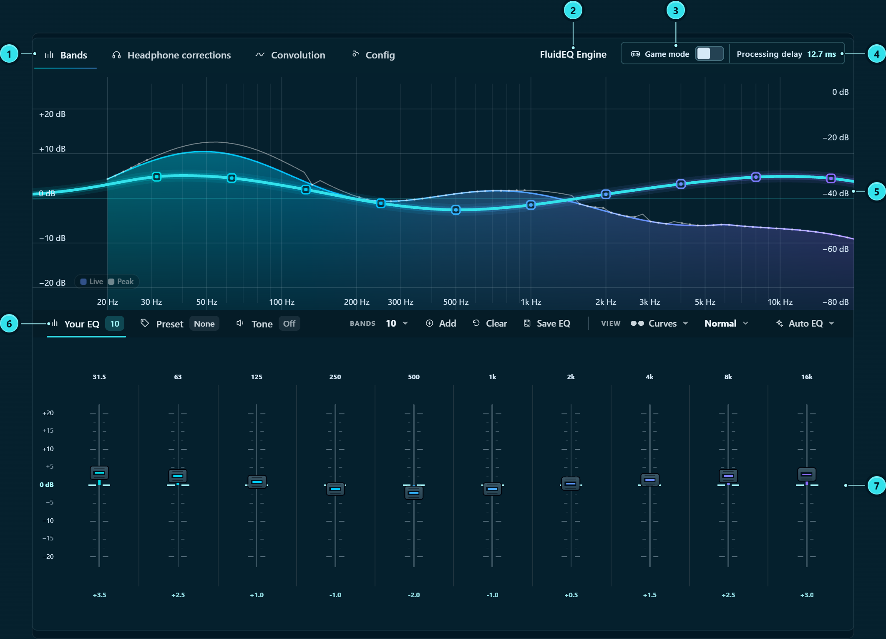
- 1The EQ’s pagesBands, Headphone corrections, Convolution and Config: what shapes the sound, one page each.
- 2The engineWhich engine plays your EQ: the FluidEQ Engine or Equalizer APO. A red dot means it is not reaching the output you are listening to.
- 3Game modeCuts the delay FluidEQ adds, for games and calls. Gaming presets turn it on.
- 4Processing delayHow late the engine plays the sound on this output. Press it to see which stage adds what.
- 5The graphYour EQ’s curve and a point on every band, with what you hear moving behind it. Drag a point to shape the sound; the graph chapter has the rest.
- 6Your EQ, Preset, ToneThree tabs under the graph: your own bands, a ready-made preset under them, and the Tone’s cuts and dials. Each tab’s tools stand at the row’s end.
- 7Your bandsOne slider per band, its frequency on top and its gain below. The EQ chapter shows each part.
Try it
- Install FluidEQ and keep the FluidEQ Engine selected when setup asks how to process your sound. Windows asks for permission once, with no restart.
- Choose your listening device in the sound panel’s Output card. Press the power key at the top of the left rail and leave Auto normalize on.
- Play a song, open EQ → Bands, drag one band’s slider a little, and compare with the power key off and on.
Around the window
The header takes you between FluidEQ’s pages and shows the sound as it plays. The left rail holds FluidEQ’s power key, the preamp and the level meter; the sound panel on the right follows your output and its profiles.
The header, up to the signal

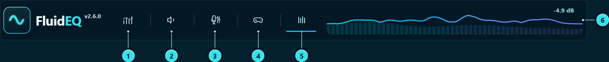
- 1ScenesScenes: the gallery, the Studio and Dynamic lighting.
- 2Share AudioSends this computer’s sound to another one, or plays another one’s here.
- 3MicYour microphones, each with a voice sound of its own that every app hears.
- 4Gaming LabYour games, each with a sound of its own, tuned for that game.
- 5EQYour bands, presets, headphone correction and the engine’s config.
- 6Audio signalWhat is playing, as it plays, with its peak level; the graph’s View menu can hide it.
The header, after the signal

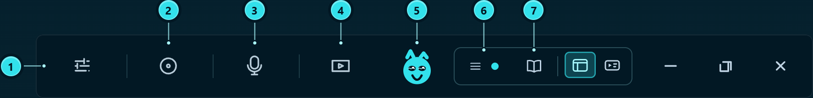
- 1DSPThe effects rack: presets, the Room and every stage of the chain.
- 2LibraryYour music files, albums and play queue.
- 3KaraokeSing along, and make karaoke out of your own songs.
- 4Online MediaYouTube, YouTube Music, Bandcamp, Twitch and Suno, played inside FluidEQ with your EQ on them.
- 5Support the workWays to support the work on FluidEQ.
- 6FluidEQ actionsTwo columns. Commands and behaviour: the engine, Fix audio problems, Restart Windows audio, the On/off key (a shortcut that turns all FluidEQ processing off and on while another app is in front; none at first, and a card above your other windows confirms each switch), importing EQ settings or an impulse response, Processes, Reset all settings, animations, Start with Windows and the language. Looks: Brightness, Tint and its second colour, Tint app icon, the EQ sliders and Set as desktop background.
- 7HelpThis guide, What’s new, Full release notes, Forum, the audio troubleshooter, Report a problem and About FluidEQ. Full release notes opens all the notes directly. About has links to its sections and, where the support link is available, a Buy Me a Coffee card with a QR code.
The left rail

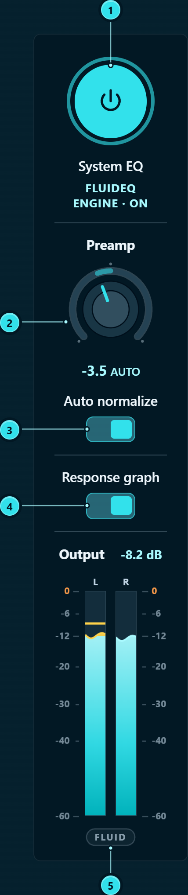
- 1System EQFluidEQ’s power key: turns its processing on or off for everything the PC plays. The line under it names the engine; it turns red when the engine is not reaching the output you are listening to, and a press then asks about the engine.
- 2PreampLowers the level before the EQ so boosts have room. While Auto normalize holds it, it reads AUTO; with it off, turn the dial or press its number to type a level. Ctrl+click returns it to 0 dB.
- 3Auto normalizeKeeps the preamp just low enough that nothing you boost can clip.
- 4Response graphShows or hides the response graph.
- 5Level meterThe output level, left and right, in real decibels, with the louder channel’s peak above it. Press it for its next style; Ctrl+press goes back one.
Try it
- Open a page from the header: Scenes, Share Audio, Mic, Gaming Lab, EQ, DSP, Library, Karaoke, Online Media.
- Press the power key at the top of the left rail to turn FluidEQ on, and leave Auto normalize on, so no boost can clip.
- Press the level meter for its next style; Ctrl+press goes back one.
- In the ≡ menu, slide Brightness anywhere from fully dark to fully white, and give Tint a second colour to draw the bands, the title and the lit controls in a gradient between the two.
- To switch processing from another app, open the ≡ menu → On/off key and choose your own key combination. No key is assigned at first; the confirmation above other windows says whether FluidEQ is on or off.
- Right-click any text field for Cut, Copy, Paste and Select all. Searches ignore case, accents, spaces and punctuation: typing kpop matches K-pop.
The Compact player
One switch turns FluidEQ’s window into the Compact player, a single narrow column: a scene or style at the top with the song over it and the play controls under it, then Sound, your equaliser, then Up next and your playlists. Whatever is playing keeps playing, and the same switch brings the full app back on the page you left.
The top: the song, and how it plays

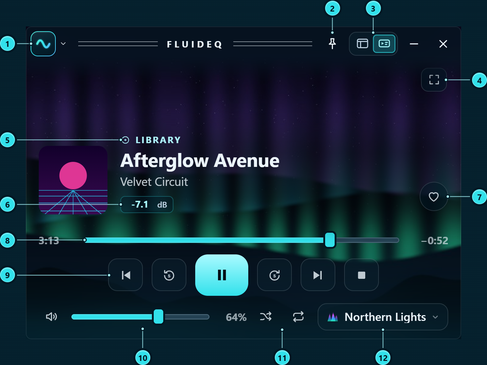
- 1Player menuBack to the full app or to one of its pages; the player’s own Brightness, Transparency or Tint, a scene’s Daylight, Tint app icon and the EQ sliders; Always on top and Fold to one line.
- 2Always on topKeeps the player above every other window.
- 3Compact playerBack to the full app, on the page you left.
- 4Full screenFills the screen with the scene or style. Double-clicking the picture does the same, and Escape gives the screen back.
- 5SourceWhere the song is coming from: the Library, Online Media, Karaoke, another computer or another program on this PC. Pressing it opens that page in the full app.
- 6Output levelThe level of the sound leaving FluidEQ, in decibels.
- 7Add to FavouritesAdds a song from the Library to your Favourites, or takes it out.
- 8Position in the songWhere the song is. Drag to jump.
- 9Play controlsPrevious, back five seconds, play or pause, forward five seconds, next and stop.
- 10System volumeYour computer’s volume, the same as in Windows: it sets the level of everything the computer plays.
- 11Shuffle and repeatShuffles Up Next, and repeats nothing, everything or this song.
- 12LookThe style or scene on the player. Press it to choose from all of them.
Sound, your equaliser

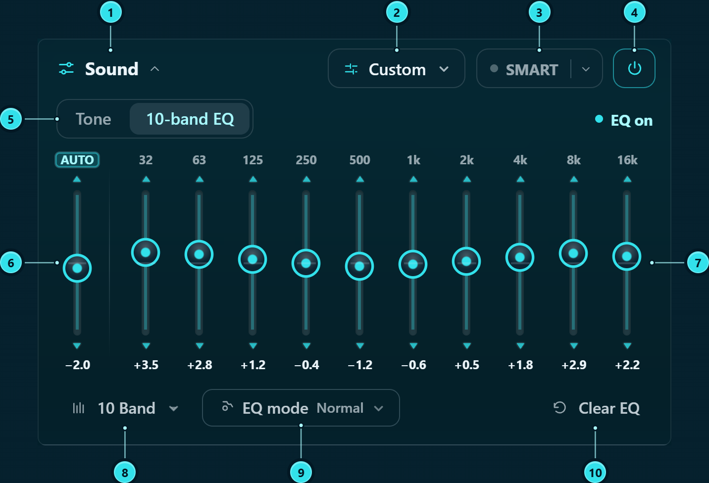
- 1SoundFolds the sound controls down to this row, which keeps the preset, Smart correction and the switch at hand, and opens them again.
- 2PresetsA ready-made chain for the sound, such as Music or a genre. None leaves only your own bands.
- 3Smart correctionAuto EQ: each song’s saved sound, its album’s sound from the Library, and Smart correction on top — Detail, Balance or Target.
- 4System EQFluidEQ’s power key: turns its processing on or off for everything the PC plays. The line under it names the engine; it turns red when the engine is not reaching the output you are listening to, and a press then asks about the engine.
- 5ToneTone shows the Bass, Mid and Treble dials; the tab beside it, every band.
- 6PreampLowers the level before the EQ so boosts have room. While Auto normalize holds it, it reads AUTO; with it off, turn the dial or press its number to type a level. Ctrl+click returns it to 0 dB.
- 7BandsDrag a band up or down to boost or cut it. Its frequency is written under it.
- 8Quick layoutsHow many bands: band counts that start every band at one Q, the band designs you saved, and Reset layout.
- 9EQ modeOpens EQ mode: how strongly your EQ and the curves apply, their band Q, phase and treble.
- 10Clear EQSets every gain, and the Tone, to 0 dB and keeps your bands. Asks first.
Up next

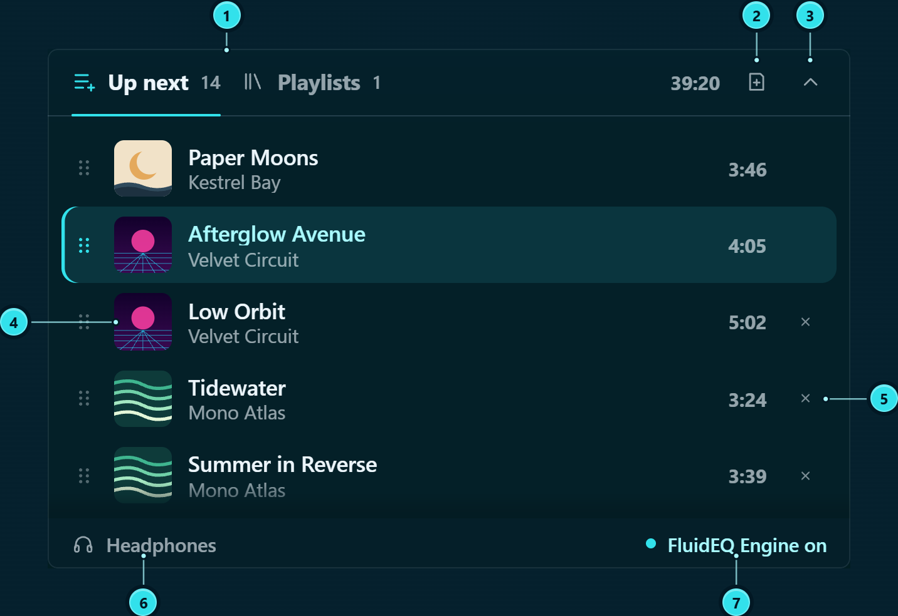
- 1Up nextUp next and Playlists, each with how many it holds, and the time left in the queue.
- 2Save as playlistKeeps Up next as a playlist of its own.
- 3Fold the queueFolds Up next and Playlists down to their tabs, and the picture takes the room.
- 4The songsWhat plays next. Click a song to play it, drag it to move it, or drop music files here to add them where you let go.
- 5Remove from the queueTakes a song that has not played yet out of Up next.
- 6OutputWhere the sound is going: the output Windows plays through.
- 7EngineWhich engine is shaping the sound, lit while FluidEQ is on.
The player’s menu

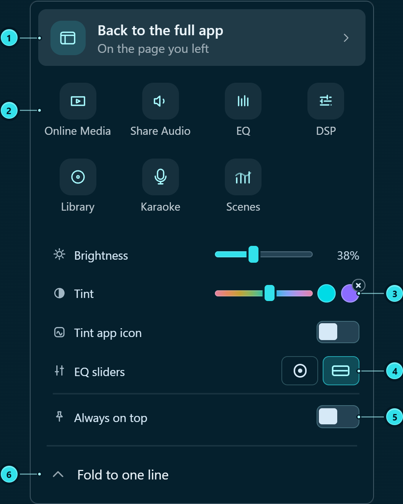
- 1Back to the full appBack to the full app, on the page you left.
- 2Open in the full appOpens the full app on one of its pages.
- 3BrightnessThe player’s own Brightness, apart from the full app’s; Transparency over a scene, or the window’s Tint over a standard style; a scene’s Daylight; and Tint app icon, off at first, for the taskbar icon, the tray icon and the icon in the tray’s menu in the window’s colours.
- 4EQ slidersRound handles or rectangular caps on the EQ’s sliders, here and on the EQ page.
- 5Always on topKeeps the player above every other window.
- 6Fold to one lineFolds the player to one line.
Folded to one line

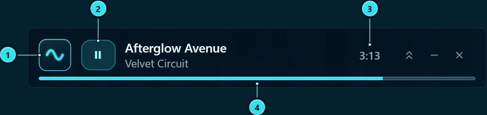
- 1UnfoldUnfolds the player. The arrow at the other end does too.
- 2PlayPlay or pause.
- 3Time played or time leftTime played. Click it for the time left.
- 4Position in the songWhere the song is. Drag to jump.
Try it
- Press the Compact player switch in the title bar, beside Help. On the player, the same switch brings the full app back.
- Fold Sound, or Up next and Playlists, down to its header, and the picture takes the room; press the header to open it again. Drag the player’s top or bottom edge to make it taller or shorter.
- Double-click the picture to fill the screen with it; Escape gives it back. Press the look’s name beside shuffle and repeat to choose from every style and scene.
- Choose Fold to one line in the FluidEQ mark’s menu to fold the player down to one line; the mark unfolds it.
- In the same menu, set the player’s own Brightness, the Transparency over a scene or the window’s Tint over a standard style, and a scene’s Daylight. Always on top, there or in the header, keeps it above other windows.
- Drop music files anywhere on the player: they join the Library and the end of Up next or, over the list, the place where you let go.
- In Sound, choose Tone for Bass, Mid and Treble or Bands for the full EQ. Its preset and EQ mode controls change the same output as the full app. Explore scenes opens the gallery in the full window; automatic scene switching works in the Compact player too.
What your PC needs
FluidEQ runs on any Windows PC of the last ten years. Two parts ask for more than the rest: the scenes draw on the graphics card, and the karaoke AI downloads its models the first time you use it.
Try it
- Check your Windows: Windows 10 version 1803 or later, or Windows 11, 64-bit, 4 GB of memory and about 600 MB of disk. Processing everything the PC plays needs the FluidEQ Engine or Equalizer APO, and Windows asks for permission once while it installs.
- Play scenes: any graphics card or built-in graphics from 2013 onwards. At 1080p built-in graphics are enough; 4K, or a desktop background on several screens at once, is happier with a dedicated card. On a busy card FluidEQ draws the scene smaller and lets go of the ones you cannot see.
- Try the karaoke AI: separating a voice downloads a 713 MB model the first time, the pitch model adds about 360 MB, and noise removal 11 MB. With a DirectX 12 graphics card a four-minute song separates in around half a minute; on the processor alone it takes about four minutes. Keep 2 GB of memory free while it works.
- Aim for this if you can: Windows 11, 8 GB of memory, graphics from 2018 onwards, and 3 GB of disk free if you use the AI features.
The FluidEQ Engine
FluidEQ processes your sound with its own engine or with Equalizer APO. The FluidEQ Engine runs inside Windows' audio service after your sound card's effects, brings your EQ and the DSP rack to everything the PC plays, and steps aside the moment FluidEQ closes.

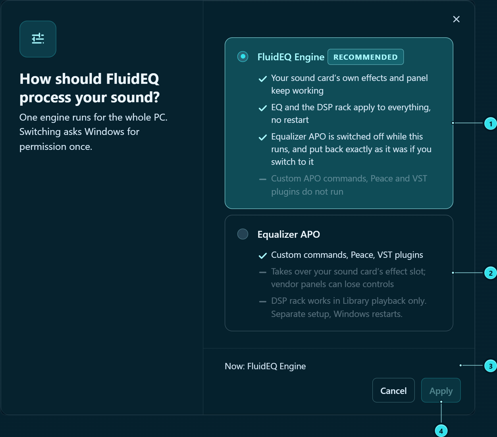
- 1FluidEQ EngineRecommended. Your sound card's effects keep working, and the EQ and DSP rack reach every app.
- 2Equalizer APORuns custom APO commands, Peace and VST plugins. The DSP rack stays with Library playback.
- 3The engine nowWhich engine plays your sound now; Apply stays off until you choose the other.
- 4ApplySwitches the engine. Windows asks once, and audio restarts for a few seconds.
Try it
- Open the actions menu (≡) and press the engine card at the top.
- Choose FluidEQ Engine and press Apply. Windows asks for permission, and audio pauses for a few seconds while it restarts.
- If an output shows OFF, press Enable on its notice. If a notice says the engine is not running, press Restart Windows audio.
Shape your sound with EQ
Your EQ is the bands you shape yourself. Frequency chooses where a band acts, Gain sets the boost or cut, and Q sets its width: higher Q is narrower. Under the graph three tabs share the page: Your EQ, Preset and Tone, each a layer of its own. Begin with small, broad changes and compare often.
The tabs under the graph, on Your EQ

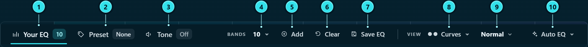
- 1Your EQYour own bands, and how many there are.
- 2PresetThe preset under your bands, and the presets to pick from: by genre, by use, and your own.
- 3ToneLow cut, High cut, Bass, Mid and Treble: quick tone that leaves your bands as they are. It says Off while none is in use.
- 4Quick layoutsHow many bands: band counts that start every band at one Q, the band designs you saved, and Reset layout.
- 5Add EQ bandAdds a band beside the selected one, at the Q of the bands already there.
- 6Clear EQSets every gain, and the Tone, to 0 dB and keeps your bands. Asks first.
- 7Save EQKeeps what plays as a saved EQ, updates the one that is on, puts another on, or opens them all to manage.
- 8CurvesWhat else shapes this output — a preset, a headphone correction, Smart correction, a convolution — each with its strength, its switch and ×.
- 9EQ modeHow strongly your EQ and the curves apply, band Q, phase, treble and smoothing; it says Normal until you change something. With the EQ mode card pinned, it brings the card into view.
- 10Auto EQAuto EQ: each song’s saved sound, its album’s sound from the Library, and Smart correction on top — Detail, Balance or Target.
Your bands

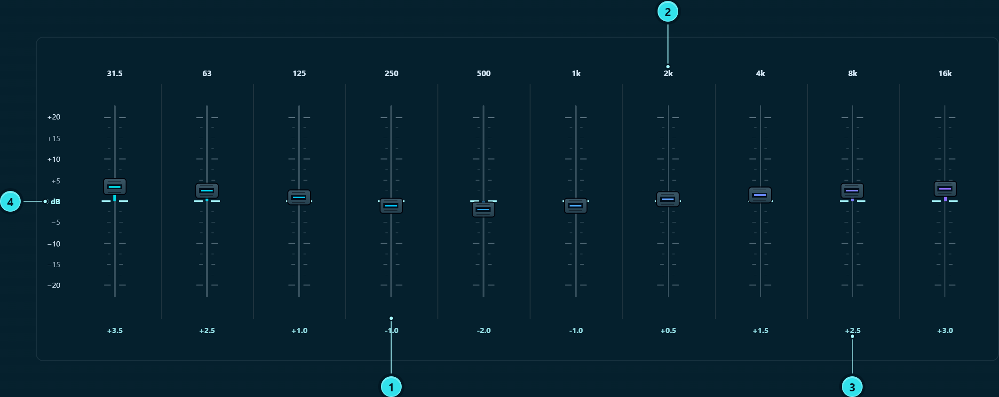
- 1A bandDrag its slider to boost or cut, or step it with the arrow keys. Ctrl+scroll over it changes its Q.
- 2FrequencyClick it to select the band. Ctrl+click or double-click puts it back on the layout’s frequency.
- 3GainThe band’s gain, in dB.
- 4dB scaleFrom +20 to −20 dB beside the sliders, with 0 dB marked, as a console prints it beside its faders.
A band’s popover, while Shift is held

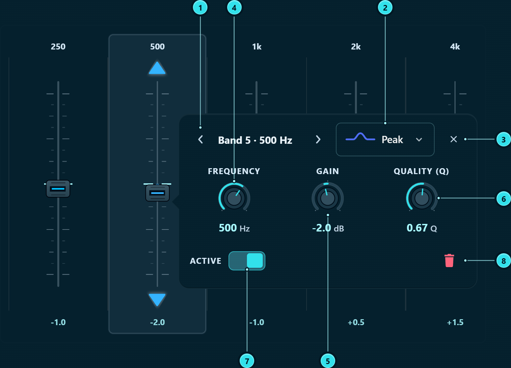
- 1Band before and afterShift+Tab‹ and › move the popover to the band below or above, as Shift+Tab and Tab do inside it.
- 2FilterIts shape: a peak, a shelf, a notch or a pass filter.
- 3Close the band settingsEscPuts the popover away and keeps the band selected. Letting go of Shift does the same.
- 4FrequencyWhere the band acts, from 1 Hz to 20 kHz.
- 5GainHow much it boosts or cuts. Ctrl+click returns it to 0 dB.
- 6Quality (Q)How wide it is: higher is narrower. Ctrl+click returns it to the layout’s Q.
- 7ActiveTakes the band out of the sound and keeps its settings.
- 8Delete bandPress once to arm it, again to delete the band; the × beside it changes your mind.
A band's right-click menu

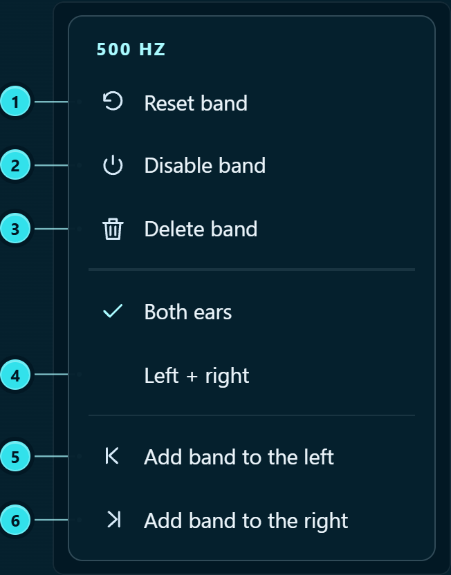
- 1Reset bandGain back to 0 dB and Q back to 2.
- 2Disable bandTakes the band out of the sound and keeps its settings.
- 3Delete bandTurns red and asks for a second press before it deletes the band.
- 4Left + rightOne band for each ear at the same frequency, to move apart; Both ears joins them again.
- 5Add band to the leftAdds a band halfway to its lower neighbour.
- 6Add band to the rightAdds a band halfway to its higher neighbour.
Try it
- Open EQ → Bands. Your EQ holds your bands; Preset puts a ready-made sound under them, and New preset makes one of your own; Tone has Low cut, High cut, Bass, Mid and Treble, drawn as a line of their own.
- Drag a band’s slider, or its point on the graph, to boost or cut; the curve follows as you move. Click a band’s frequency, or its point, to select it. Ctrl+scroll over a band changes its Q.
- Hold Shift with a band selected to bring up its popover beside it: its filter, the Frequency, Gain and Q dials, Active and the bin. Shift+Tab and Shift+← → step to the band before or after; Esc or × puts it away.
- Everything works from the keyboard too: Tab to a slider, a dial or a point on the graph, and the arrow keys step it; Page Up and Page Down take bigger steps.
- Right-click a band to reset it, switch it off, delete it (it asks for a second press), add a band beside it, or choose Left + right: one band for each ear at the same frequency, the left ear’s curve drawn solid and the right’s dashed. Both ears joins the two again.
- Select several bands with Ctrl or Shift, or drag a box round them, to move them together; Ctrl+A on the graph selects every band.
- Save EQ keeps what plays as a saved EQ you can put on again, update or manage. Clear sets every gain to 0 dB and keeps your bands; it asks first.
- A preset of your own (Preset → New preset) starts its curve from a preset or flat; you shape it on the graph and its rack on the DSP page. Its tile’s menu exports it to a file, and Import on the Preset tab reads one back.
EQ mode and band designs
EQ mode changes how your sound is shaped, without editing anything. It is a button in Your EQ’s tools under the graph, and pinned it is the first card of the sound panel, beside the curves it changes. It has two tabs: Your EQ covers your bands, the Tone, presets, Driver type and Smart correction; Corrections covers headphone corrections and imported or custom curves. Band designs keep the frequencies and Q of a layout you like, ready for any output.
The EQ mode card

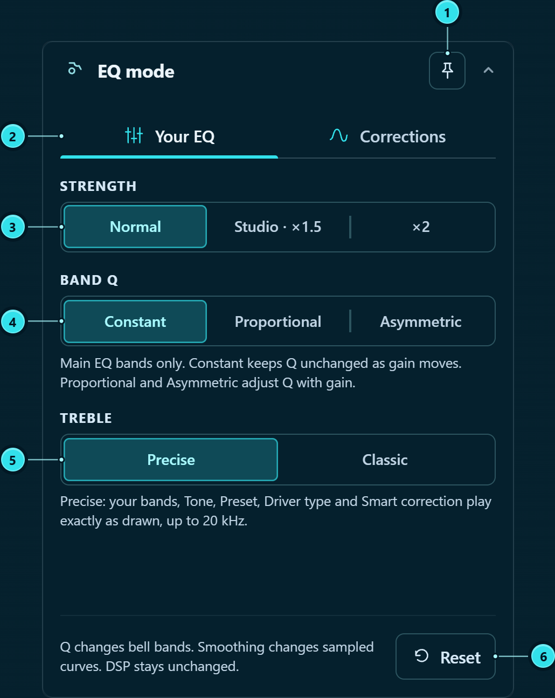
- 1Put back in the menuPuts these settings back in a menu over the graph. The menu’s pin brings the card back.
- 2Your EQ and CorrectionsTwo tabs, each with its own settings.
- 3StrengthNormal, Studio ×1.5 or ×2. Each tab keeps its own.
- 4Band QConstant keeps each Q; Proportional and Asymmetric narrow bands as they grow. On Your EQ it shapes your own bands alone, never a preset or a correction.
- 5TreblePrecise plays treble as drawn; Classic as Equalizer APO does. With the FluidEQ Engine only.
- 6ResetEverything back to Normal, and Curve smoothing back to Off.
Band designs

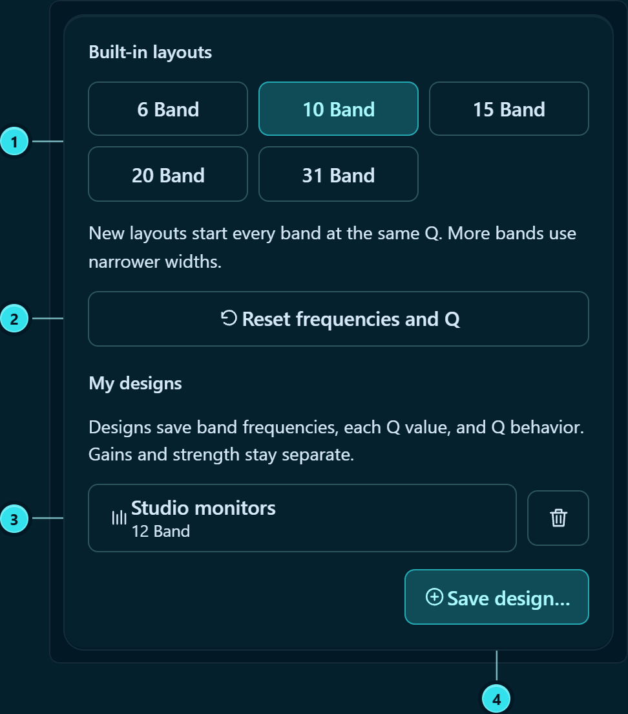
- 1Built-in layoutsStandard layouts of 6, 10, 15, 20 or 31 bands.
- 2Reset frequencies and QPuts every band back at its layout’s frequency and Q; gains stay as they are.
- 3My designsA design you saved: press it to load its frequencies and Q, every band at 0 dB. The bin beside it deletes it, after asking.
- 4Save design…Names the current frequencies and Q as a design, listed under My designs.
Try it
- Press EQ mode in Your EQ’s tools under the graph. Pinned, the card comes into view in the sound panel; otherwise it opens as a menu over the graph.
- Pick the Your EQ or Corrections tab, then try a Strength or Band Q choice while music plays. Under the FluidEQ Engine choose Precise or Classic treble for each tab, and Minimum or Linear phase where a tab offers it.
- On Corrections, Curve smoothing can soften sampled curves at 1/12 or 1/3 octave; it is Off until you choose. Reset puts everything back to Normal, and smoothing back to Off.
- Would you rather have a menu? Press the pin on the card: EQ mode then opens as a menu over the graph, and the pin in that menu brings the card back.
- Open the band count button in Your EQ’s tools. Pick 6, 10, 15, 20 or 31 bands, or press Save design… to name the current layout.
Gaming Lab
Give each game its own sound. A game starts from a Gaming profile made for it and gets its own copy: you tune the copy in the Gaming Lab, and the profile never changes. When the game comes to the front, FluidEQ puts its sound on and keeps it until you close the game, whatever you alt-tab to in between. Then your music sound comes back.

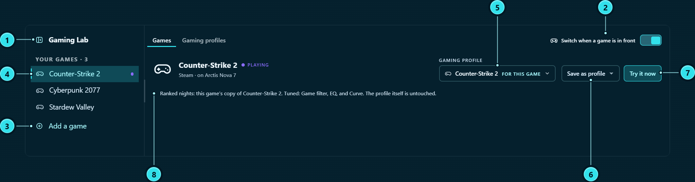
- 1Collapse the sidebarYour games run down the left and scroll on their own. Drag the rail’s edge to change its width. The pin folds it to the games’ icons, which open it over the page while the pointer is on them; press the pin again to keep it open. Its width and fold are remembered.
- 2Switch when a game is in frontLets a game in front put its own sound on. Off, your games keep your music sound.
- 3Add a gameAdds a game from Steam, Epic, EA, GOG, Ubisoft, Battle.net or Xbox, or any program that is open now. FluidEQ, Windows Explorer, known system and launcher processes, and shared runtime installers are left out.
- 4A gameA game. The one open is marked, and a dot at its end means it is in front now. Its tooltip says the profile its sound started from and whether you tuned it.
- 5Gaming profileThe Gaming profile this game’s copy starts from. Picking another gives the game a fresh copy of it.
- 6Save as profileSaves the copy as a new profile or updates one of yours, resets it to its profile, renames it or deletes it. The profile itself never changes.
- 7Try it nowPuts the game’s sound on now, so you hear what you tune. While it is on, Unload stands here and brings your music sound back.
- 8What was tunedWhich parts of this copy are different from its profile.

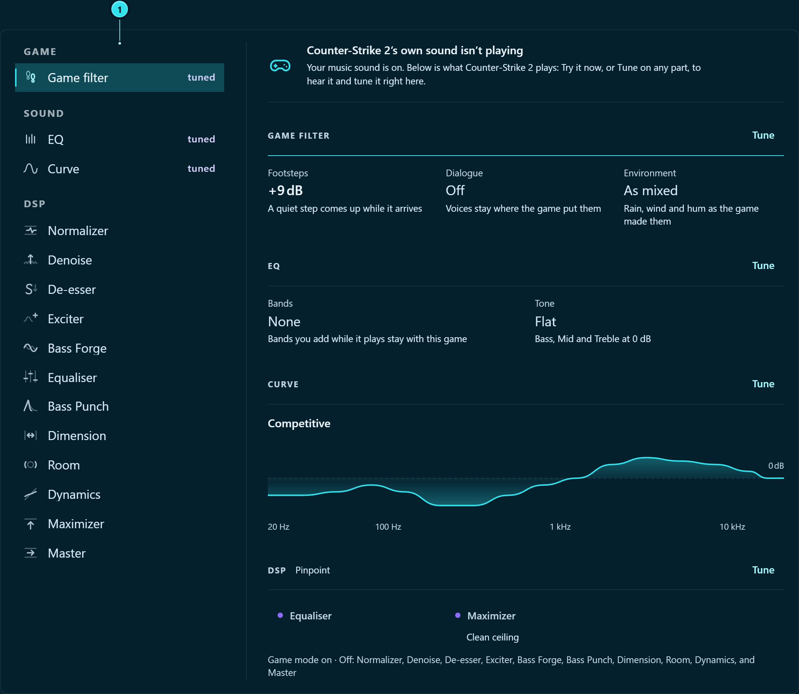
- 1Its partsEvery part of the game’s sound, each tuned in its own editor beside the list. Tuned marks what moved away from the profile.
Gaming profiles

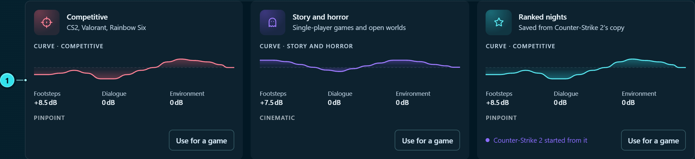
- 1Gaming profilesOpen Gaming profiles to search by profile, game, curve or chain. The filters stay on one line and each kind of game has its own colour. Your saved profiles show their curve, Game filter levels and chain too. Use for a game starts a new copy.
Try it
- Open the Gaming Lab in the title bar and press Add a game. Pick one from your launchers, a program that is open now, or browse for its program. It starts from the Gaming profile suggested for it; pick another in its Gaming profile list any time. The list has 32 title-specific profiles, including Counter-Strike 2, Valorant and Fortnite, plus 9 kinds of game.
- Press Try it now to put the game’s sound on. Pick a part on the left — the Game filter, EQ, Curve or any DSP stage — and tune it right there. Every change stays in this game’s copy.
- Save as profile keeps the copy as one of your own Gaming profiles for other games, updates yours, resets the copy to its profile, renames the copy or deletes it.
- Start the game. A card on the desktop says its sound is on, and another says your music sound is back when you close it. The card shows the loaded profile’s name, and names the music profile when it returns.
The Game filter: steps, surroundings and voices
The Game filter gives each game separate control over quiet cues, its background and dialogue. Start from that game’s profile, then tune its own copy while listening.
Try it
- Open Gaming Lab, select a game and press Try it now if its sound is not already on. Choose Game in that game’s parts.
- Raise the footsteps lift for quiet steps, reloads and doors. Calm holds distracting loud events; compare before pushing both controls.
- Hooves and heavy steps brings more of the low weight forward for boots, horses and vehicles. Leave it off when it makes cues too heavy.
- Environment turns the game’s bed down or up. The stage lets go when a step or another distinct sound stands out, so the cue is not lowered with the background.
- Dialogue brings a centred voice forward. Make room lowers the rest a little while somebody speaks.
- Use Isolate to hear what Game changes, then return to the full game. Save as profile keeps your tuning for other games; resetting the game returns it to its starting profile.
Headphone correction & imports
A headphone correction compensates for a measured model. It is a starting point you can combine with your own bands and presets. Check the exact model and the measurement author before applying a result.

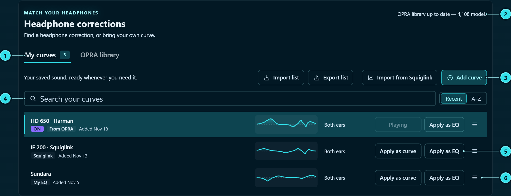
- 1My curves and OPRAYour own curves, with how many you keep, and OPRA’s library of measured headphone corrections.
- 2OPRA updatesWhether OPRA’s library is up to date, with how many models it holds; when a newer one is out, Update database fetches it.
- 3Add curveA Squiglink export, a .txt file, your EQ as it is now or an OPRA pick, for both ears or one. Import from Squiglink beside it pastes straight from Squiglink; Import list and Export list carry the whole list.
- 4Search and orderFinds a curve by its name; Recent and A–Z beside it order the list.
- 5Apply as EQApply as curve plays it as a correction layer and keeps your bands; Apply as EQ puts it in your bands instead (only the ears it was saved for), after asking.
- 6A curve’s menuRename, edit its bands, duplicate, copy as text or delete.
Try it
- Open EQ → Headphone corrections. It opens on My curves, your own list; the OPRA library tab beside it holds measured corrections for thousands of headphone models. Search for your exact model and choose the matching entry.
- For EQ text from another tool, use Import EQ settings in the actions menu. Review the parsed bands and curve before applying.
- For Squiglink, press Import from Squiglink on My curves, paste its export and review the live curve preview, then use it as a curve or as editable EQ.
- Add curve takes a Squiglink export, a .txt file, your EQ as it is now or an OPRA pick, and asks which ears it is for: both, the left or the right. Each curve has Apply as curve and Apply as EQ; Apply as EQ replaces only those ears’ bands, after asking.
- A curve’s menu (≡) renames it, edits its bands, duplicates it, copies it as text or deletes it. Export list and Import list carry the whole list to another computer.
My curves: import, edit and share
My curves is your own library beside the headphone measurement library. Keep a curve once, inspect its response and choose whether it becomes a correction layer or editable EQ bands.
Try it
- Open the Headphone corrections page; it opens on My curves. Search or sort the list to find a saved curve.
- Use Add curve for your current EQ, a text file, a measurement-library pick or pasted data, and say which ears it is for. Import from Squiglink accepts its exported EQ text. Review the preview before saving.
- Apply as curve adds a correction layer and leaves your editable bands in place. Apply as EQ replaces the bands of the ears the curve was saved for, after confirmation.
- A curve’s menu can rename it, edit its bands, duplicate it, copy it as text or delete it. Editing a saved curve does not require starting the import again.
- Export list and Import list carry the whole collection between computers. Keep the measurement author and model clear when you share a correction.
Use an impulse response
Convolution applies a WAV impulse response as another correction layer. FluidEQ includes a searchable AutoEq catalogue and can import your own WAV. It remains separate from the editable parametric bands.

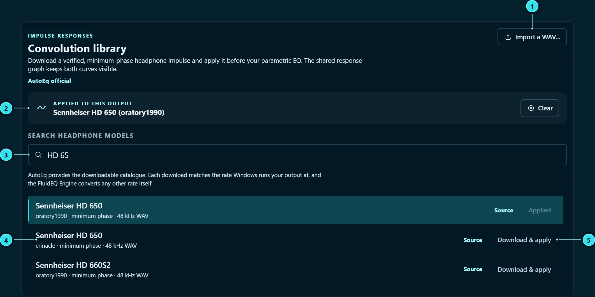
- 1Import a WAV…Applies a WAV you already have, at any rate under the FluidEQ Engine.
- 2Applied to this outputThe impulse this output plays now. Clear takes it off.
- 3Search headphone modelsSearches AutoEq’s catalogue by model or measurement author.
- 4A resultThe model, who measured it, and the impulse’s phase and rate. Source opens where it was published.
- 5Download & applyDownloads the impulse at your output’s rate and applies it. Applied marks the one playing.
Try it
- Open EQ → Convolution. Search by model or measurement author.
- Check the source, then use Download & apply; the download matches your output’s rate. Use Import a WAV for a file you already have.
- Listen with the convolution layer on and off in Curves.
Devices, profiles & second output
Every output keeps its own sound: the EQ, the preset, the Tone, the cuts, the DSP rack, the Room and the leveling are saved with it and come back the moment you switch to it. Profiles keep other sounds for the same output. Second output plays on another device at the same time, with a sound and a level of its own.

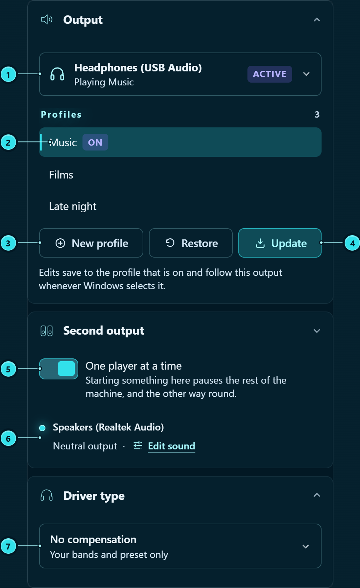
- 1Output deviceThe output you are listening on, with its battery for Bluetooth headphones. OFF means your EQ does not reach it; ACTIVE, that Windows is playing through it.
- 2ProfilesSounds you saved. ON marks the one this output uses; press another to switch. A profile’s pencil renames it and its bin deletes it, after asking.
- 3New profileStarts a new profile from the EQ you have now.
- 4UpdateSaves your changes into the profile you are on. Restore, beside it, brings the profile back as you last saved it.
- 5One player at a timeStarting something in FluidEQ pauses what plays elsewhere on the PC, and the other way round.
- 6Second outputYour other outputs. Switch one on to play there too, with its own sound, level and delay in milliseconds. Edit sound changes its sound on the EQ page without switching the main output.
- 7Driver typeA gentle starting point for what you listen on — headphones, earphones, a driver size or material. Leave it at No compensation if the sound is already right.
Try it
- Check the output at the top of the Output card before editing; Bluetooth headphones show their battery beside it. Use New profile for a sound you want to keep; Update saves changes to that profile, and Restore brings its saved settings back.
- Each song’s own sound is in Auto EQ on the EQ page now: a song keeps its preset, Tone and EQ on every output, and the Library sets one for an album.
- Open Second output, switch on a device and set its level. Choose its profile beneath it, or press Edit sound to change its sound on the EQ page without switching the main output; Done or Edit main takes you back.
- Each second output keeps itself in time and shows its delay in milliseconds; with Share Audio, another computer’s sound shows its own delay, the network included.
Auto EQ: each song’s sound
Auto EQ, on the EQ page, decides each song’s sound: the sound saved for the song, its album’s sound from the Library, or yours. Smart correction adds a measured correction on top. A song’s sound follows it to every output; the headphone correction stays the output’s.
Try it
- Open Auto EQ at the end of Your EQ’s tools (it fills while any of its parts is on) and switch on Song sounds, Album sounds and Smart correction as you like; each one turns off on its own. Measure once, at the panel’s foot beside Manage, measures what plays one time and applies it at once.
- While a song plays, press Save for this song to keep the sound you hear. When it plays again its sound comes back, and when a song with nothing saved follows, your own sound comes back.
- Change the preset, the Tone or a band while a saved song plays and you hear it at once. Save changes keeps it for the song, and so does the Save beside Auto EQ without opening it; Restore, followed by the saved sound’s name, puts the saved sound on again. A change you leave unsaved is not kept: next time the song plays its saved sound. A change on a song with nothing saved becomes your sound instead.
- In the Library, right-click a song, a selection or an album, or use an album’s Album sound, to choose a preset or keep what is playing now. A song’s own sound beats its album’s; albums change only in the Library.
- Manage lists every saved song and album, with Forget. Reset all settings turns Auto EQ off and keeps them.
- Your saved EQs are in the Save EQ menu in Your EQ’s tools: keep what plays as a named EQ, update the one that is on, put another on, or open Manage saved EQs…. A song saved while a saved EQ is on follows it: update that EQ and the song plays the new version.
Inspect & back up a chain
EQ → Config shows what the audio engine actually has on disk. The output cards and include tree help you see which device and layers are involved. Export a chain before a large experiment or when moving a setup.

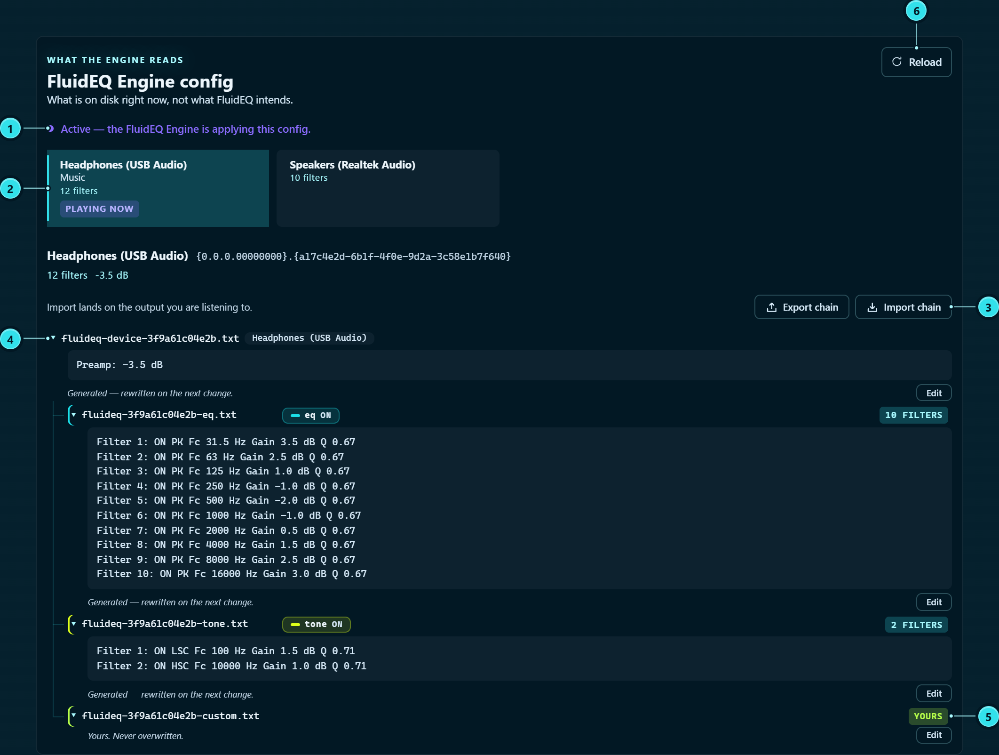
- 1Whether it is appliedWhether the engine is reading this config at all, said before anything else.
- 2OutputsEach output in the config, with its profile and how many filters it applies; Playing now marks the one you hear. Press one to see its chain.
- 3Export and importExport chain saves this output’s chain as a .fluideq file; Import chain brings one back onto the output you are listening to.
- 4The chain’s filesThe output’s file and each layer’s file under it, in the order the engine reads them, with what each one says.
- 5Your own fileThe one file FluidEQ never rewrites: put lasting lines of your own here with Edit.
- 6ReloadReads the config from disk again.
Try it
- Open EQ → Config and choose the output you want to inspect. Read its status and active layers.
- Use Export chain to save a .fluideq file. Keep a copy somewhere you can find again.
- To bring a chain back, select the intended output first, then use Import chain and review the result.
Explore the DSP rack
The DSP rack is a chain of studio stages. Under the FluidEQ Engine it processes everything the PC plays; under Equalizer APO it processes Library audio tracks. It is off while FluidEQ is switched off.

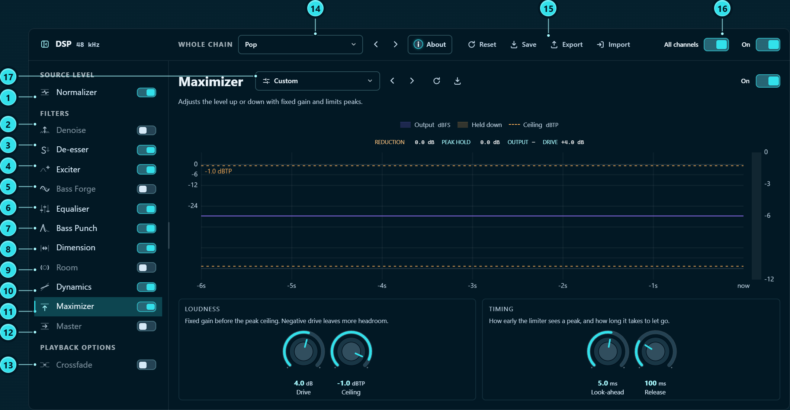
- 1NormalizerEvens out the source’s level before every effect: Loudness, True Peak or off. Picking a chain never changes it.
- 2DenoiseRepairs hiss, hum and clicks. The neural voice cleaner works on Library tracks.
- 3De-esserThe De-esser reduces sharp S, T and SH sounds when they occur. Its four groups decide what it hears, what it turns down, how fast, and where in the stereo sound it acts.
- 4ExciterAdds harmonics for body and air.
- 5Bass ForgeAdds a real octave below the bass, or its harmonics for small speakers.
- 6EqualiserFifteen parametric bands, with minimum or linear phase.
- 7Bass PunchShapes the attack, sustain and bloom of the bass.
- 8DimensionWidens the stereo picture without changing the mono sum.
- 9RoomSurround on headphones: each channel becomes a speaker in a room around you.
- 10DynamicsDynamics is a three-band compressor that lifts quiet passages and holds loud ones without adding delay. Use it on music, films, speech or a game’s own sound.
- 11MaximizerRaises the level without letting peaks pass the ceiling.
- 12MasterFinal level, loudness target and peak safety.
- 13CrossfadeBlends one Library track into the next.
- 14Whole chainReady-made chains for music, genres, devices and repairs. Picking one sets every stage at once.
- 15Chain actionsReset puts the chain back; Save keeps the rack as a chain of your own; Export and Import carry it to another computer.
- 16Rack switchesAll channels runs the rack on every channel of a surround output, or on the front pair alone; On switches the whole rack.
- 17Stage presetThe open stage’s own presets, with its arrows, Reset and Save, which keep this stage alone.
Try it
- Open DSP and pick a chain under Whole chain, at the top: it sets every stage at once. About opens a genre chain’s notes, with listening examples on YouTube.
- Press a stage in the rail to open it, and switch it on with its own switch. Its preset picker sets that stage alone, and Save beside it keeps just that stage.
- The Normalizer stands apart from the chains: picking a chain never changes it.
- Compare with a stage off at a similar volume. Isolate, where a stage has it, plays only what that stage changes. Ctrl-click a dial to put it back.
- Save keeps the whole rack as a chain of your own; Export and Import carry it to another computer, and Reset puts the chain back as it was.
- All channels runs the rack on every channel of a surround output; the switch beside it turns the whole rack on or off.
- Dynamics, De-esser, Denoise, the Room and Crossfade have chapters of their own. The Game filter is on the Gaming Lab; while a game’s own sound is on, this page rests so nothing here can overwrite it.
Normalizer and live level control
The Normalizer changes the source level before the creative stages. Library files can be measured in full; other system audio is learned while it plays. It stands apart from the chains: picking one never changes it.
Try it
- Open DSP → Normalizer and choose Off, True Peak or Loudness. For external audio, the same card is called Live level control, with Peak protection and Live leveling modes.
- For True Peak, set Peak ceiling. This mode lowers a source when its peaks exceed that limit; it does not boost quieter sources.
- For Loudness, set Loudness target and Peak ceiling. The target applies to the loudest three-second passages; clips shorter than three seconds use integrated loudness.
- For Library playback, let Source analysis finish. Read Foreground loudness, Integrated loudness and Applied gain: the first describes the strongest passages, while the second measures the whole track.
- For Live, play the source while Learning source is shown and watch for Holding gain. A louder passage may lower the gain; quiet passages keep their relative level.
- Check Applied gain and any limiting reason before raising the target. Peak headroom and the boost limit can prevent reaching it. Compare at a similar listening volume; one foreground target does not make every track’s whole-song loudness identical.
Denoise & source analysis
Denoise reduces hiss, mains hum and clicks. Under the FluidEQ Engine it works live on anything the PC plays; the neural voice cleaner and the scanned noise floor are for Library tracks. Stronger reduction is not automatically better.

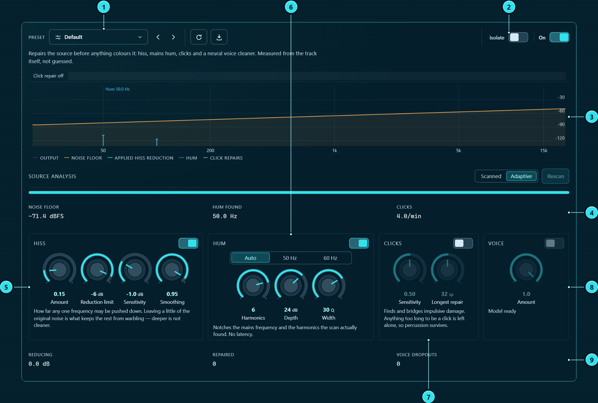
- 1PresetsStarting points for a gentle or a strong clean-up, hiss, hum, clicks, vinyl, tape or a podcast. Save keeps your own.
- 2IsolatePlays only what Denoise takes away, so you can check it takes nothing you want to keep.
- 3Noise pictureThe sound against its noise floor, with the hiss reduction, the hum and the click repairs drawn as they happen.
- 4Source analysisOn a Library track: the noise floor, the hum and the clicks a minute, measured from the file itself. Rescan measures again.
- 5HissLowers the steady hiss under the music. Reduction limit leaves a little of it, so what remains does not warble.
- 6HumNotches out mains hum and its harmonics. Auto takes 50 or 60 Hz from what the scan found.
- 7ClicksFinds and bridges short clicks and crackle; anything longer is left alone, so drums survive.
- 8VoiceThe neural voice cleaner, for Library playback. Its model downloads the first time you use it.
- 9What it is doingHow much it is reducing right now, the clicks repaired, and any moment the voice cleaner fell behind.
Try it
- Play something with the noise you want to reduce and select Denoise in DSP.
- Switch on Hiss, Hum or Clicks with a light setting, and listen to quiet passages and to musical detail.
- Increase reduction gradually, then bypass the stage to check that the improvement is worth any loss of detail.
- For a Library file, let its source analysis finish before comparing the measured noise floor or neural voice cleaner. Live system audio can use hiss, hum and click reduction, but the neural voice cleaner is for Library playback.
De-esser: soften sharp voices
The De-esser reduces sharp S, T and SH sounds when they occur. Its four groups decide what it hears, what it turns down, how fast, and where in the stereo sound it acts.

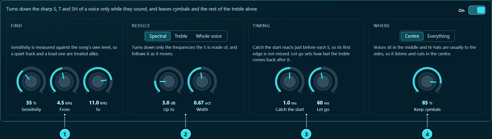
- 1FindSensitivity is measured against the song’s own level, so a quiet track and a loud one are treated alike.
- 2ReduceTurns down only the frequencies the S is made of, and follows it as it moves.
- 3TimingCatch the start reacts just before each S, so its first edge is not missed. Let go sets how fast the treble comes back after it.
- 4WhereTurns down the sharp S, T and SH of a voice only while they sound, and leaves cymbals and the rest of the treble alone.
Try it
- Open DSP → De-esser, switch it on and try a preset while a recording with a sharp voice plays.
- In Find, set the lower and upper listening frequencies around the harsh sound, then raise Sensitivity until those sounds are caught without reacting to every bright note.
- In Reduce, Spectral follows only the offending frequencies; Treble turns down the upper band. Whole voice lowers the entire sound and is intended for an isolated voice. Set how far it may reduce, and the width where available.
- Use Timing to catch the beginning of the sound and set how quickly the treble returns. In Where, Centre only concentrates on a centred voice; Keep cymbals protects bright hits.
- Turn Isolate on to hear only what is removed, then turn it off to judge the complete recording. The display follows the control you are adjusting and shows what the stage did.
- Save a useful setting from the stage’s preset bar. Choosing a whole-rack chain later can replace the stage settings, so save the complete rack too if you want to keep it.
Dynamics: quiet and loud passages
Dynamics is a three-band compressor that lifts quiet passages and holds loud ones without adding delay. Use it on music, films, speech or a game’s own sound.

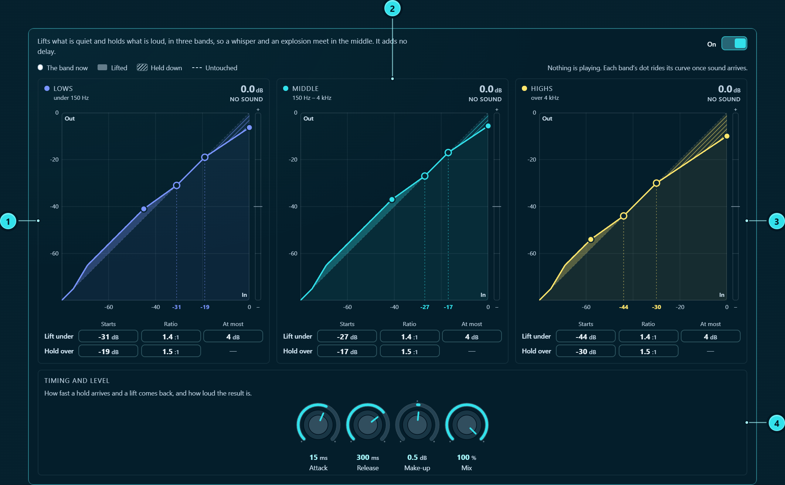
- 1LowsUnder 150 Hz: the boom of a blast, a kick, an engine.
- 2Middle150 Hz to 4 kHz: voices, steps and most of the sound.
- 3HighsOver 4 kHz: detail, air, the edge of a step.
- 4Timing and levelHow fast a hold arrives and a lift comes back, and how loud the result is.
Try it
- Open DSP → Dynamics, switch it on and choose a preset as a starting point. Everyday presets are here; presets for games are in the Gaming Lab.
- The three bands cover lows below 150 Hz, the middle from 150 Hz to 4 kHz, and highs above 4 kHz. Tune the band containing the sound you want to change.
- Under Lift, Below sets when quiet sound is raised, Ratio sets how strongly, and Up to limits the added gain. A ratio of 1:1 leaves it alone.
- Under Hold, Above sets where loud sound is reduced and Ratio sets how firmly. Lowering Above makes the hold act more often.
- Set Attack and Release for the response, Mix to blend with the unprocessed signal, and Make-up to adjust the result’s level. Compare at a similar listening volume.
- Each band has its own curve, level in across and level out up. Drag a hollow point to set where a lift or a hold starts and a filled one to set how strong it is, or type an exact value in the table under it. While sound plays, a dot rides each curve to show what the band is doing now. If a notice asks for an Engine update, sound processing may already work while the live display needs the update.
The Room: surround on headphones
The Room turns headphones into a listening room. Every channel of the sound becomes a speaker standing around your head, rendered through a measured head and the reflections of a room you shape yourself, so a film sits in front of you and a game surrounds you. It needs the FluidEQ Engine and headphones; on speakers it does nothing useful.

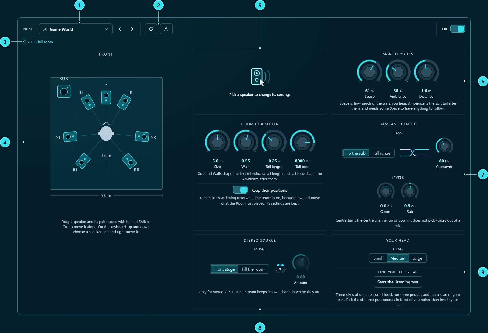
- 1Room presetThe rooms to start from, grouped like every other stage's profiles; Custom once you shape one.
- 2SaveName the room as it stands; it comes back with a press.
- 3What the room is doingRead from the engine: which speakers the playing stream reaches, or why the room is idle.
- 4The room from aboveThe room from above: walls that fade as they absorb, the speakers on their ring, the head in the middle. All of it is drawn to one scale, so a speaker standing further out than the room is wide is drawn outside its walls. Drag one and its pair moves with it; hold Shift to move it alone.
- 5The chosen speakerPress a speaker in the room and this pane becomes its own: its angle as a number, its own distance, its level, and Mute or Solo to hear it alone.
- 6Make it yoursHow much of the walls you hear, the soft tail after them, and how far the speakers stand. Size, Walls and the tail's own length and tone are in Room character below.
- 7Bass and centreSends the speakers’ bass to the sub or keeps it full range, at a crossover you choose, and sets the centre and the sub’s levels.
- 8Stereo sourceFor a stereo source only: keep it a front stage, or fill the room around you by the amount you choose.
- 9Your headThe measured head the room renders through — small, medium or large — and the listening test that picks it for your ears.
Try it
- Open DSP, choose Room in the rail and switch it on. Stereo becomes two speakers in front of you; a 5.1 film five and the sub; a 7.1 game the whole ring. The line under the presets says which.
- Pick a room under Room preset — the featured rooms first, then the classic ones and your own — or turn Space, Ambience and Distance yourself and drag a speaker around the ring. Speakers the playing stream cannot reach are drawn asleep.
- Press a speaker: the pane beside the picture becomes its own, with its angle, its distance, its level, and Mute or Solo.
- Under Your head, press Start the listening test and answer five short listening pairs: the room takes the head that puts sounds in front of you. Small, Medium and Large can be chosen by hand too.
- Save a room you like under a name; a saved room comes back with a press and never changes your head.
Crossfade and custom fade curves
Crossfade overlaps consecutive Library tracks. Its playback settings are separate from the DSP filters and do not crossfade other apps or Karaoke.
Try it
- Put at least two tracks in the Library queue. In DSP, choose Crossfade under Playback options and switch it on.
- Set Duration, then choose Equal power, Smooth or Linear. Let the first track reach its ending to hear the overlap.
- Choose Custom to shape the outgoing and incoming fades. Drag the handles, or focus a handle and use the arrow keys to adjust it.
- Watch both curves and the combined level. Keeping both high together can make the overlap louder.
- Save curve keeps a shape under its own name; choose it again from the saved list. Reset shape returns the editable shape to its starting form.
Your microphone’s sound
The Mic tab gives each microphone a voice rack of its own. The FluidEQ Engine runs it on the microphone itself, so Discord, OBS, a game or a call hears your voice as you shaped it. It needs the FluidEQ Engine.

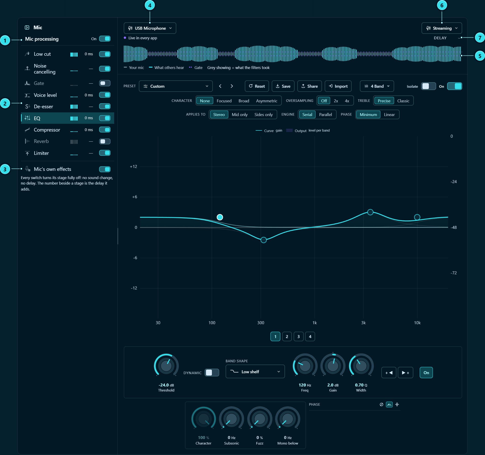
- 1Mic’s own effectsWhat the mic’s maker puts on your voice before FluidEQ. Its switch asks Windows for permission each way.
- 2Mic processingTurns the whole voice rack on or off for this mic.
- 3The stagesIn the order your voice meets them, each with its switch, a meter that moves with your voice and the delay it adds. Press one to open it.
- 4MicrophoneThe microphone you are shaping; each one keeps its own sound. The line under it says whether the engine is working on it now.
- 5Your voiceFaint is what the mic picks up, bright is what others hear, and grey showing is what the filters took.
- 6Mic profileReady-made voice sounds by use, by mic, for singing and as voice effects. A change marks the profile tuned; Reset brings it back.
- 7DelayHow much the whole rack delays your voice, as the engine measures it.
Try it
- Open Mic in the header and choose your microphone at the top. If FluidEQ is not on it yet, press Set up on this mic; Windows asks for permission once.
- Pick a Mic profile by use — Streaming, Podcast, Game chat, Meetings — by mic, for singing, or a voice effect. It sets every stage for a voice; a stage you change marks the profile tuned, and Reset brings it back.
- Press a stage in the rail to open it. Each has its own switch, a meter that moves with your voice and the delay it adds; a stage switched off is gone from the sound completely.
- Speak and watch the picture: faint is what the mic picks up, bright is what others hear, and grey showing is what the filters took. Hear the final result plays it back to you; wear headphones, or it howls.
- Mic’s own effects shows what the mic’s maker puts on your voice before FluidEQ. Switching them off stops the voice being cleaned twice; Windows asks for permission, and switched on again they come back exactly as they were.
The graph and its controls
The response graph draws your EQ curves over the live sound. Its options rest out of sight and come back under the pointer: the legend in one corner, View and full screen in the other, and along the foot the gallery of looks, the one on the graph in the middle with its switches, the ones before and after it at the ends. What the gallery offers changes with the look: a standard style or a scene.
With a standard style

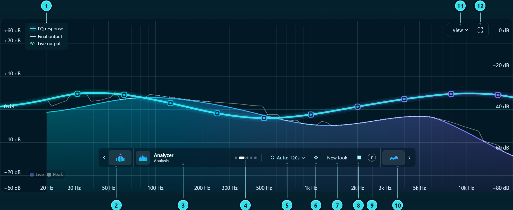
- 1LegendThe name of every curve drawn, and Live output for the wave. Press one to hide or show its drawing; the sound stays the same.
- 2Previous styleCtrl+SpaceSteps back to the previous look.
- 3Styles and scenesOpens every style and scene.
- 4Place in the walkWhere this look stands among the ones the arrows step through.
- 5Automatic scene switchingChanges the look every 10 seconds to 2 minutes.
- 6ColouringColours the style: Auto, Flat, Frequency, Level or Heat.
- 7New lookDesigns a look of your own from this style.
- 8GridCtrl+GShows or hides the grid and scales.
- 9How to edit on the graphPoint at it for the moves: drag a point, Ctrl or Shift to select, Ctrl+scroll for Q, Ctrl+drag to move a group as a bell.
- 10Next styleSpaceSteps forward to the next look.
- 11ViewWhat the graph draws and how: every curve, the labels, the legend, the wave, the grid, the frequency range and the meter.
- 12Full screenCtrl+FThe graph fills the screen.
With a scene

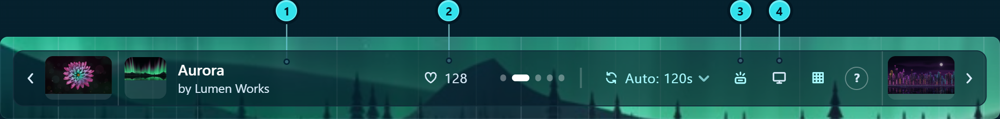
- 1The scene and its makerWhich scene is playing and who made it. Press it to choose another style or scene.
- 2LikeLikes the scene playing, which gives its maker points. On a scene of your own it shows how many likes it has.
- 3Dynamic lightingLights your RGB devices with this scene.
- 4Set as desktop backgroundPuts this scene behind your desktop icons.
The View menu

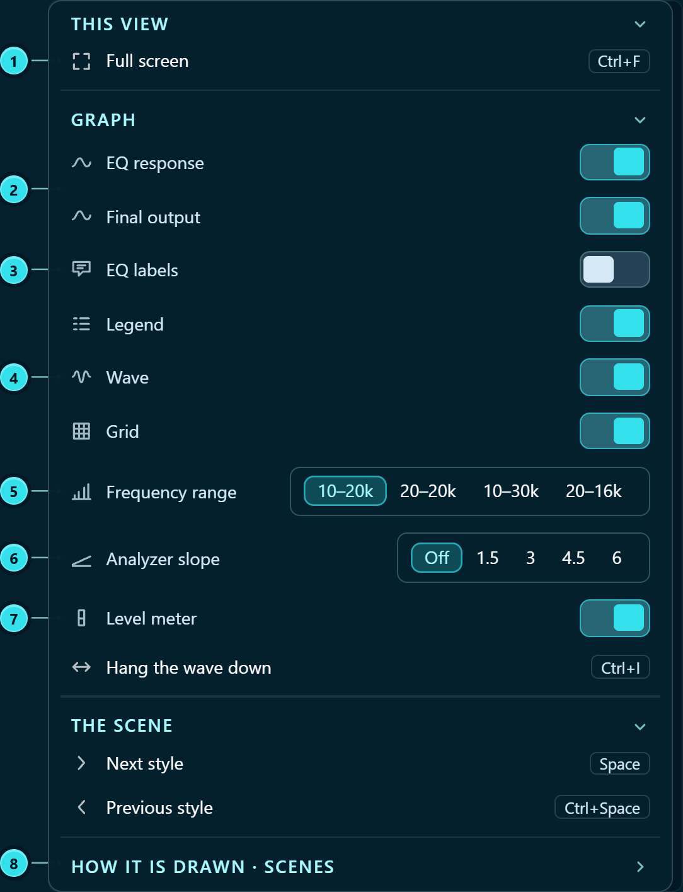
- 1Full screenCtrl+FThe graph fills the screen.
- 2CurvesCtrl+WA switch for each curve the graph draws, in the order they are applied. Ctrl+W walks Wave only, Wave with curves and Curves only; Ctrl+S walks back.
- 3EQ labelsEach band’s frequency, Q and gain over its point.
- 4WaveThe live wave of what you hear, drawn in the look you chose.
- 5Frequency rangeHow much of the spectrum the graph spans: 10 Hz–20 kHz to start with, 20 Hz–20 kHz, 10 Hz–30 kHz, or 20 Hz–16 kHz where records have sound. With the grid off it spans 20 Hz–16 kHz.
- 6Analyzer slopeTilts the analyzer by up to 6 dB per octave, so music, which falls towards the treble, reads flatter. Off by default; only on styles that draw the analyzer.
- 7Level meterThe output meter in the left rail.
- 8How it is drawnFrame rate, resolution and smoothing, kept apart for standard styles and scenes.
Try it
- Click the look’s name to choose a style or scene. The arrows beside it, Space and Ctrl+Space step through them.
- Open View for what the graph draws — every drawing has its switch, each curve its own — the frequency range, the wave’s height and position, and How it is drawn: the frame rate (every frame your display offers, or 60 or 30, held at 60 on battery), the resolution and smoothing. Standard styles keep their own choices, apart from scenes.
- A scene adds its own controls to View — whatever its author left for you to set — and Use its own wave puts the wave back to the height and position that author chose.
- Double-click the plot to fill the screen with it, and double-click again to come back. In full screen the window’s top edge brings the header and its bottom edge the transport; a click puts them away.
- Keys: Ctrl+F full screen, Esc back, Ctrl+G the grid, Ctrl+W and Ctrl+S walk Wave only, Wave with curves and Curves only, Ctrl+I which way the wave faces, Ctrl+A every band. On a band’s point, drag to move it, use the arrow keys to step it, and right-click for its menu; Ctrl+scroll changes the Q of a selected point.
- Press a curve’s name in the graph legend to hide or show its drawing. This leaves the sound unchanged. Remove or change the layer under Curves when you want to change what you hear.
Styles and scenes
Standard styles are free drawings of the live sound that you can colour and design yourself: Line and Area for a clean trace, LED blocks and Spikes for punch, Truss, Skyline and Dancing flames for whole scenes. Scenes are living pictures drawn on the graphics card, such as Alpine, Aurora, Bloom and Neon City, where the bass, the beat and the treble each move something different.

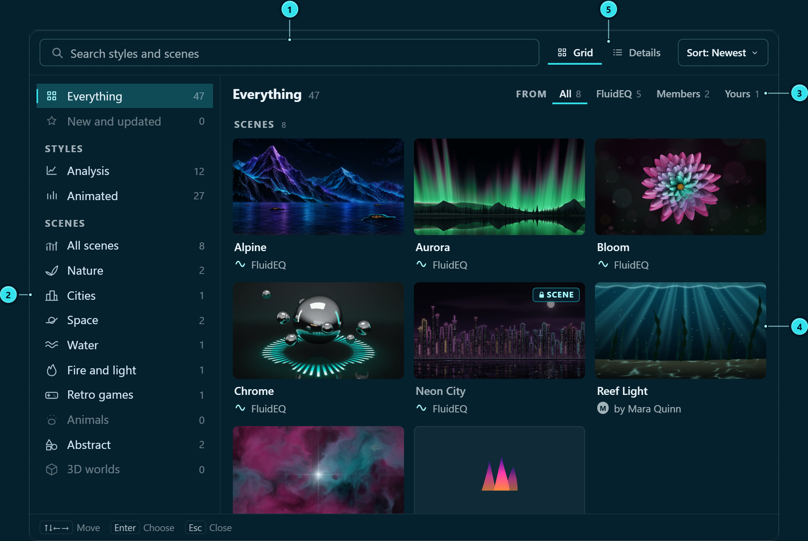
- 1SearchFinds styles and scenes by name, maker or category.
- 2PlacesEverything, New and updated, the kinds of style and every category of scene, each with how many it holds.
- 3FromWho made it: FluidEQ, members, or you.
- 4Styles and scenesEach look as a picture. New or Updated marks what changed, and Playing marks the look on the graph.
- 5View and orderPictures or a detailed list, sorted by newest, recently updated, name or most used.
Try it
- Click the look’s name on the graph. Choose a place on the left, or search everything at once.
- Use From to see only FluidEQ’s looks, members’ scenes or your own. A scene that is not yours yet is locked, and choosing it explains how to get it.
- On a standard style, press New look to change its colours, motion and peaks, then save it; it appears under From: Yours.
Your account, credits and the Scenes tab
An account is optional: everything that was free runs on this computer without one. Signed in, the Scenes tab holds the Gallery, the Studio, Dynamic lighting and the desktop background. A scene from the Gallery costs one credit and is yours for good; a confirmed account gets 1 credit free, and packs of credits are paid once.

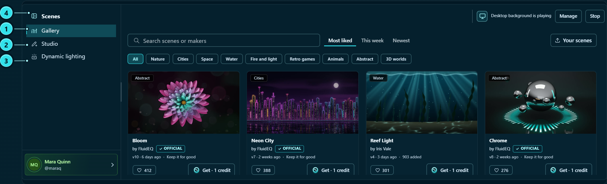
- 1GalleryScenes by FluidEQ and members, ready for your music.
- 2StudioMake your own scenes with your AI.
- 3Dynamic lightingYour RGB devices follow the scene.
- 4Collapse the sidebarFolds the rail to its pictures; it opens again on hover.
Try it
- Open the Scenes tab and press Sign in, or Create your free account and type the six-digit code sent to your email. Once you are in, your account is the card at the foot of the tab’s left rail.
- Choose Gallery. Open a scene, watch it, and press Get to spend a credit on it.
- For more credits, open your account from that card and choose a pack. It is paid once on Stripe, in your browser.
The Scenes gallery
The gallery brings together FluidEQ’s own scenes and scenes published by members. Anyone with an account can browse the gallery. If a scene has a published preview, its silent ten-second clip loops until you move on. Scenes without a clip show their cover. A scene you get with a credit plays with your music and stays in your looks.

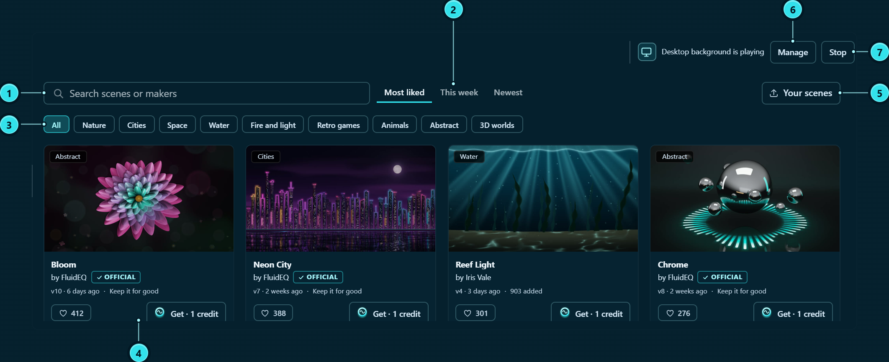
- 1Search scenes or makersFinds scenes and makers.
- 2SortMost liked, liked this week, or newest.
- 3CategoriesShows one kind of scene.
- 4A sceneIts picture opens the scene. Get keeps it with a credit, and the heart likes it.
- 5Your scenesThe scenes you published, with their likes.
- 6ManageWhat each monitor shows as a desktop background.
- 7StopStops every desktop background.
A scene's page

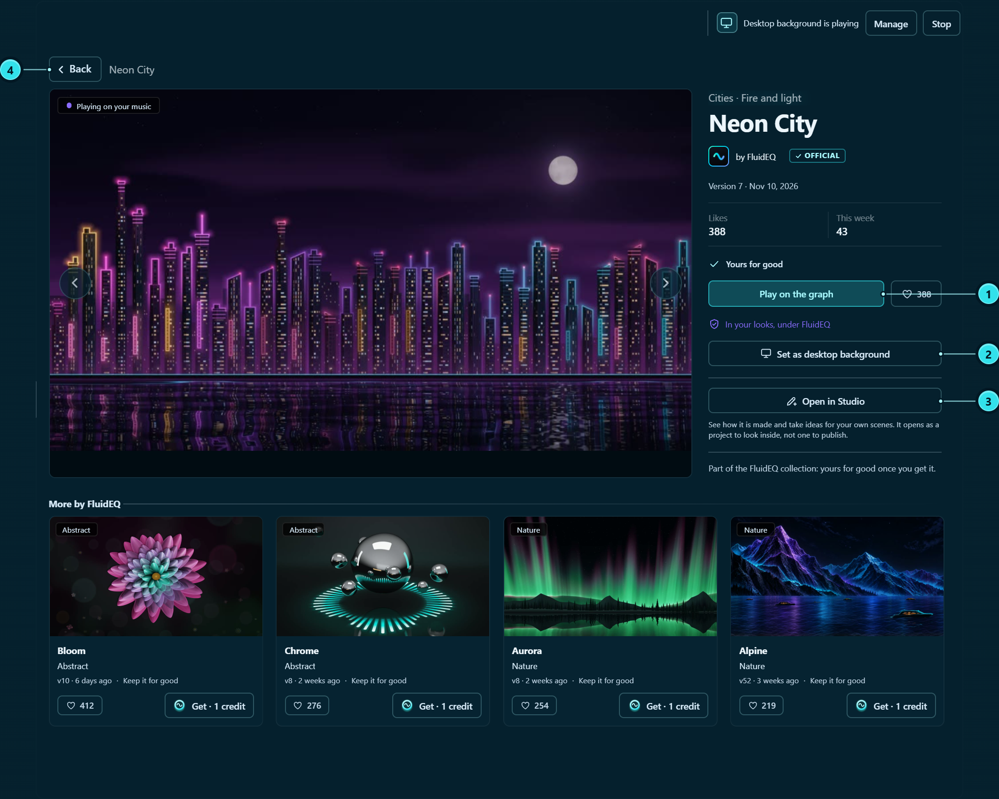
- 1Play on the graphPlays the scene on the graph. A scene you do not have yet offers Get, for one credit.
- 2Set as desktop backgroundPuts the scene behind your desktop icons.
- 3Open in StudioOpens FluidEQ’s scene in the Studio to see how it is made.
- 4BackBack to the gallery, where you left it.
Try it
- Open Scenes → Gallery. Search, sort by Most liked, This week or Newest, or pick a category.
- Open a scene and press Get to keep it with a credit, then Play on the graph. The arrows, or ← and →, step between scenes.
- Like the scenes you have with the heart, and report one that should not be there.
Make scenes in the Studio
The Studio turns a description into a scene. Your own AI assistant writes the scene in a project folder, and FluidEQ plays each version on your music the moment it is saved. The Studio is free for every account.

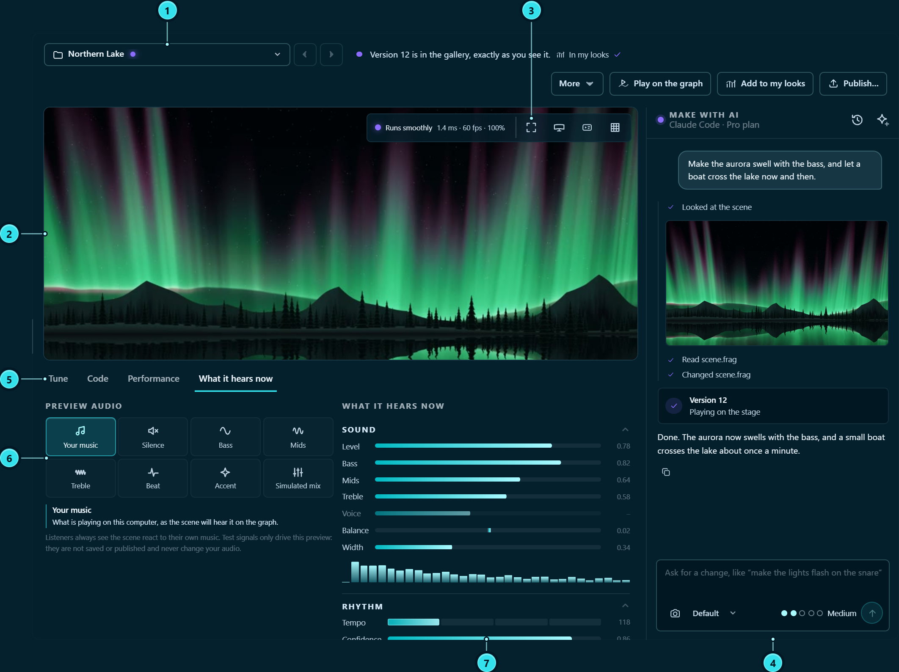
- 1ProjectYour projects, and FluidEQ scenes to look inside.
- 2StageThe scene, playing on your music. Double-click for full screen.
- 3FullscreenTries the scene full screen.
- 4Make with AIAsk Claude for a change in your own words. Each reply that changed the scene can bring that version back.
- 5Work on the sceneTune tries the wave and the scene’s own settings, Code shows its code as your AI saves it, Performance how it runs here, and What it hears now is open below.
- 6Preview audioTest signals that drive only this preview.
- 7What it hears nowWhat the scene receives: level, beat, bass, mids, treble.
Try it
- Open Scenes → Studio and press New project…. Give it a name; FluidEQ makes its folder with a scene that already moves.
- Describe your idea, open the folder in your AI assistant, and paste the prompt from Copy AI prompt.
- Or type what should change in the chat beside the stage: Claude Code on this computer, signed in with your own plan, edits the scene and plays each version. Every reply keeps its version, with Bring back.
- Watch the stage as files are saved and try the test signals. Then Add to my looks, Publish… or Export….
- In Publish…, write a line about the scene or press Write with AI, then Send for review: FluidEQ records the silent ten-second preview for the Gallery on the demo song as it sends.
The desktop background
The desktop background puts a scene behind your desktop icons, on one monitor or on each of them, for as long as FluidEQ runs.

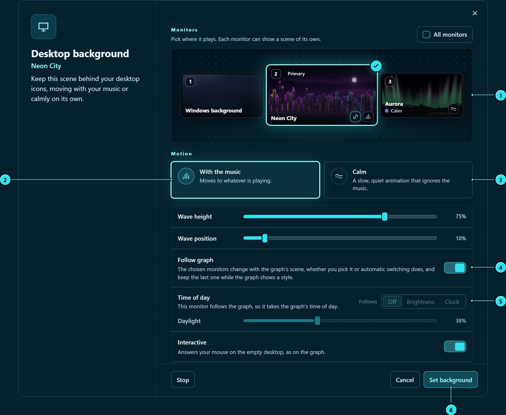
- 1MonitorsYour monitors as Windows arranges them. Press the ones to use.
- 2With the musicMoves to whatever is playing.
- 3CalmA slow, quiet animation that ignores the music.
- 4Follow graphChanges with the scene on the graph, whether you pick it or automatic switching does.
- 5Pause on battery powerSaves power while the computer is unplugged.
- 6Set backgroundStarts it on the monitors you chose.
Try it
- Put a scene on the graph and press the monitor button beside its name, or choose View → Set as desktop background.
- Press the monitors on the map, choose With the music or Calm, and press Set background.
- To change or stop it, open Scenes → Gallery and use Manage or Stop at the top.
Dynamic lighting (beta)
Dynamic lighting lights your keyboard, mouse, mousepad, headset and stand with the scene on the graph, through Windows Dynamic Lighting and Razer Chroma. It is in beta, so tell us how your devices behave.

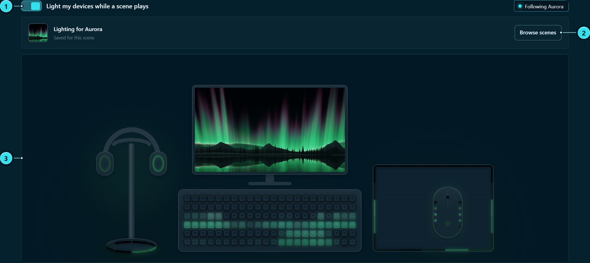
- 1Light my devices while a scene playsLights your devices while a scene plays.
- 2Browse scenesOpens the gallery to choose a scene.
- 3Live desk previewYour own desk, lit with the colours sent to it.

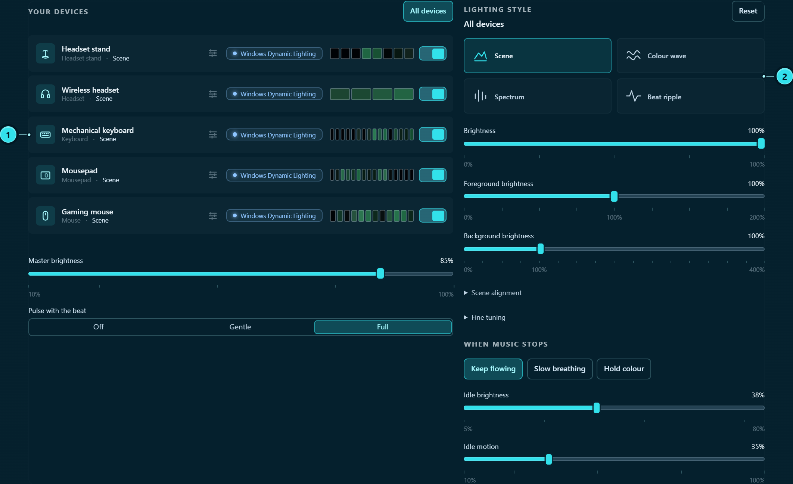
- 1Your devicesEvery device found. Click one to tune it alone; All devices, above the list, tunes them all at once again.
- 2Lighting styleScene, Colour wave, Spectrum or Beat ripple, kept for each scene.
Try it
- Open Scenes → Dynamic lighting and switch it on, or press the lighting button beside a scene on the graph.
- Choose this scene’s lighting style — Scene, Colour wave, Spectrum or Beat ripple — and set its brightness and what it responds to.
- Click a device under Your devices to tune it alone; All devices goes back to every device.
Listen with Online Media
Online Media plays YouTube, YouTube Music, Bandcamp, Twitch and Suno inside FluidEQ, laid out like the Library: the sites and your recent searches down the rail, the bar over the page. What plays goes through your EQ like any other app; playback and sign-in are each site’s own.

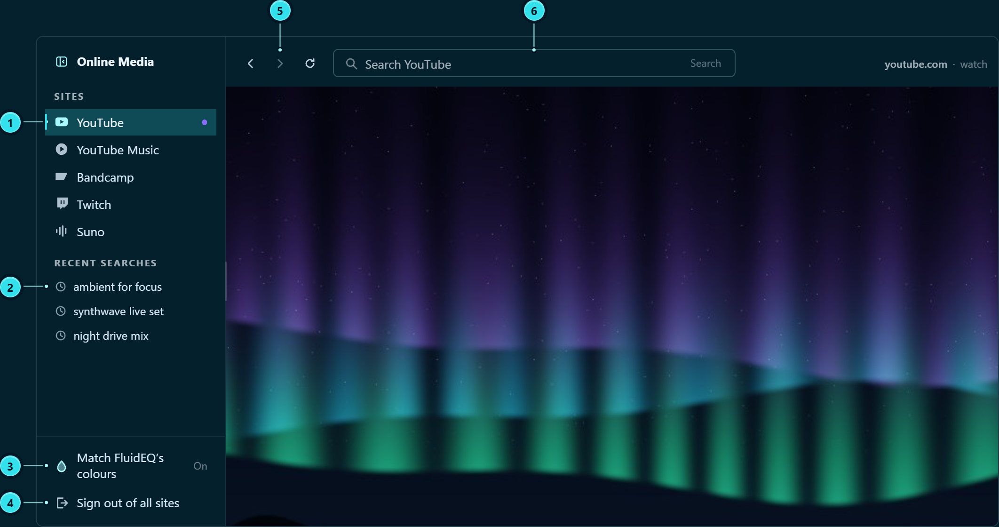
- 1SitesThe sites. A dot beside one says it is playing. The pin above them folds the rail to its icons.
- 2Recent searchesWhat you searched before. Press one to search the open site again; its × forgets it.
- 3Match FluidEQ’s coloursColours the site’s page to match FluidEQ, on your screen only. Videos, pictures and logos are never changed, and sites with light pages keep their own.
- 4Sign out of all sitesClears every login, cookie and cached page the player holds.
- 5Back, forward and reloadMove through the pages you opened on the site, or load the page again.
- 6Search the current siteSearches the site that is open, and keeps the search in Recent searches.
Try it
- Pick a site on the rail. Search it from the bar, or find something on its page and start it.
- Press a recent search to run it again on the site that is open.
- Go to another tab while it plays: the page keeps playing, and the bar at the foot of the window follows it.
- Turn on One player at a time if FluidEQ and other players should pause each other instead of overlapping.
Browse and tidy your Library
The Library gathers the music and videos on your drives in one page: the shelves down the rail, a bar to find and lay them out, and where you are under it. Covers and details come from the files’ tags, which the tag editor puts right.

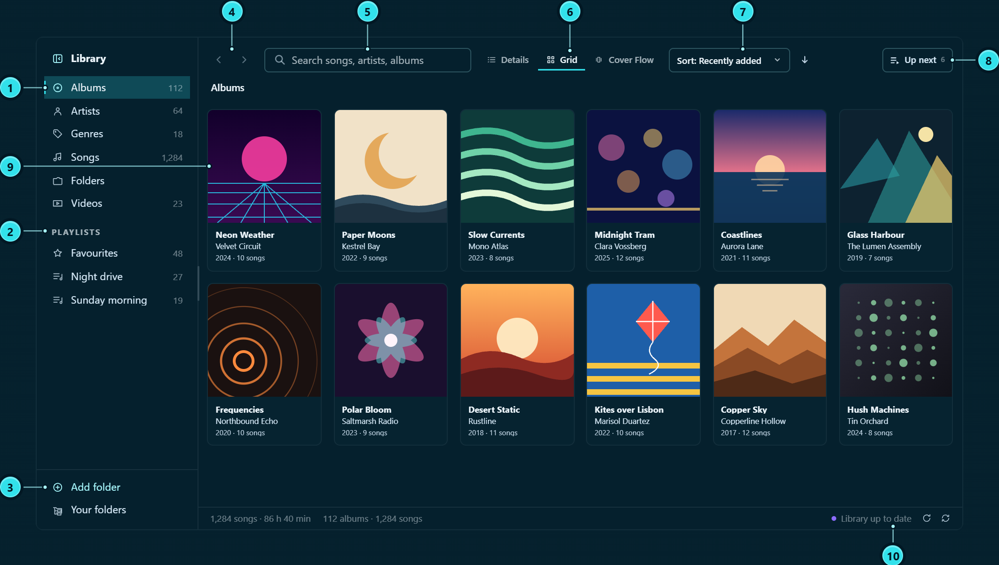
- 1ShelvesWhat the Library holds, with how much is on each. Folders opens a tree of your folders under it.
- 2PlaylistsAll your playlists, where a new one is made; Favourites and your own under it.
- 3Add folderAdds a folder of music or videos. Your folders, under it, lists them and removes one.
- 4Back and forwardSteps back and forward through the places you opened.
- 5Search songs, artists, albumsFinds songs, artists and albums in the whole Library.
- 6How the library is shownDetails, Grid or Cover Flow, on every shelf.
- 7SortOrders the shelf by title, artist, year, recently added, most played and more. The arrow turns the order round.
- 8Up nextOpens and folds the right pane: the song playing, Up next, Details and Lyrics.
- 9AlbumOpens the record. Right-click it to play all of it, queue it, add it to a playlist or edit its tags.
- 10RescanSays whether the Library is up to date. Rescan reads your folders again for changes; Force rescan, beside it, reads every file afresh.
An album in the tag editor, after Fix tags

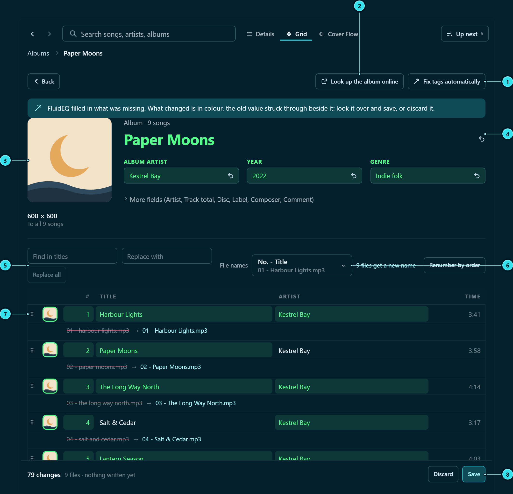
- 1Fix tags automaticallyFills in what is missing from the file names, the folder’s name, a .cue sheet and what most songs agree on, with the folder’s picture as the cover. Nothing is looked up online.
- 2Look up the album onlineOpens the album on MusicBrainz in your browser. FluidEQ downloads nothing.
- 3Change coverOne cover for every song. Press it to choose a picture, paste one or search for one, or drop an image on it.
- 4AlbumValues typed once for every song. What changed is in colour, a replaced value struck through under it; the arrow puts the old one back.
- 5Find in titlesFinds words in every title and replaces them at once.
- 6File namesRenames the files from their tags by a pattern. Each new name shows under its song, the old one struck through.
- 7SongsEach song’s number, title and artist, edited like a spreadsheet. Drag a row by its grip, then press Renumber by order.
- 8SaveWrites the changes; nothing on disk changes before. Discard drops them all.
Changes: what Save will write

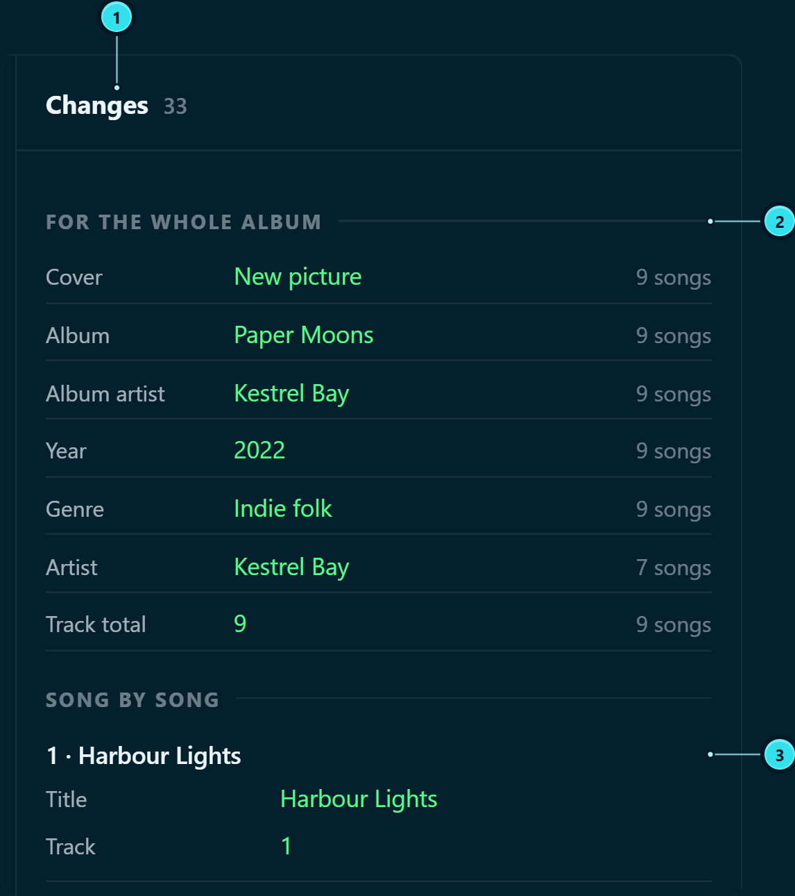
- 1ChangesEverything Save will write, counted. It takes Up next’s place while the editor is open.
- 2For the whole albumWhat changes on every song. A value filled where there was none is green; a replaced one shows the old value struck through.
- 3Song by songEach song’s own changes, then the files that get a new name.
Try it
- Press Add folder at the foot of the rail and choose the folder with your music. The status line under the page says when the Library is up to date.
- Pick a shelf: Albums, Artists, Genres, Songs, Folders (your folders open as a tree under it), Videos, or a playlist. A video plays in the page, with a Subtitles tab for its captions.
- Search from the bar, show the shelf in Details, Grid or Cover Flow, and order it with Sort. The arrows step back and forward through where you have been.
- Open a record, an artist or a folder for its songs. An artist’s name, wherever it is shown, opens their page: their records and every song they are on.
- To fix tags, right-click a song, several songs or a record and choose Edit tags (Ctrl+I) or Fix tags automatically (Ctrl+Shift+I). One song opens beside the page; an album, a folder or a selection opens as the page.
- Look the changes over and press Save. The files are written in the background, and the card in the corner offers Undo, which puts the old tags back.
Records, Up next and lyrics
A record opens under its cover without stopping what plays. Beside it, the right pane holds the song playing over three tabs: Up next, the song’s Details and its Lyrics.
A record, open

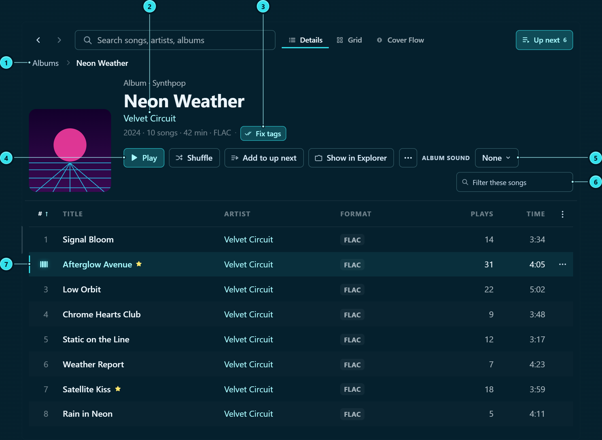
- 1Where you are in the libraryWhere you are: the shelf, then the record. Press the shelf to go back to it.
- 2ArtistOpens the artist’s page: their records, and every song they are on.
- 3Fix tagsOpens the record in the tag editor with Fix tags’ proposals typed in.
- 4The record’s buttonsPlay, Shuffle, Add to up next, Show in Explorer, and the record’s menu: Favourites, playlists, Edit tags and more.
- 5Album soundA sound for this album, a saved EQ or a preset, that plays with any of its songs.
- 6Filter these songsNarrows this record’s songs as you type. The bar’s search looks through the whole Library.
- 7The songsPress a song to play it. The bars mark the one playing, the star your Favourites; right-click for its menu.
The right pane, on Up next

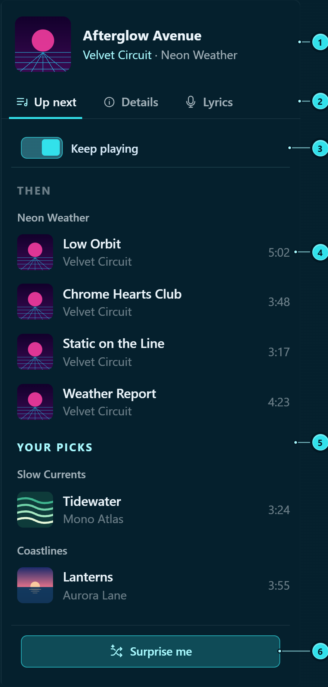
- 1Now playingThe song playing. Its artist’s name opens their page.
- 2What the pane showsUp next, the song’s Details (its file, format and loudness), and its Lyrics. For a video the last tab is Subtitles.
- 3Keep playingWhen the list runs out, carries on with more of the same genre, then a surprise.
- 4What plays nextThe rest of what you were playing, headed by its record. Press a song to play it now, drag it to reorder, point at it for its ×.
- 5Your picksSongs you added, after the rest of the record, in the order you added them.
- 6Surprise meA random song from your Library now, then more of its style.
Lyrics, and Find other lyrics

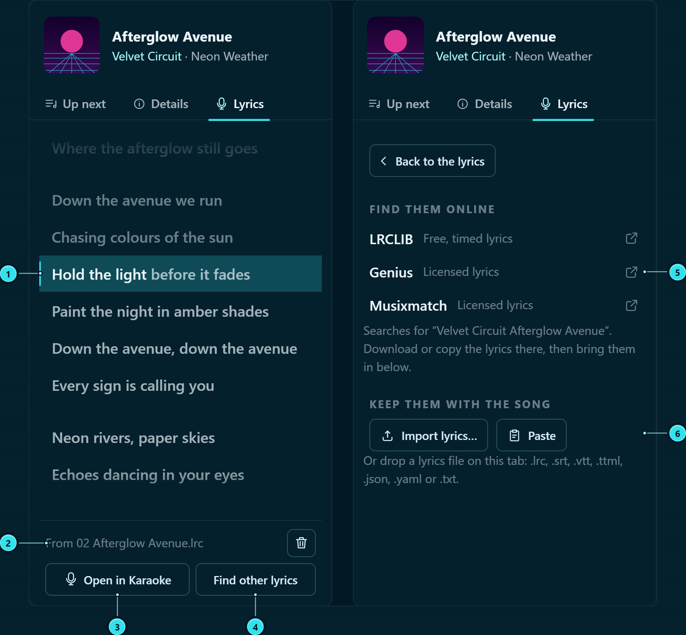
- 1LyricsThe line being sung, lit word by word. Press any line to play from it.
- 2Where they came fromThe song’s tags, or the lyrics file beside it, by name. The bin deletes a lyrics file kept with the song; words inside the song’s own file are never changed.
- 3Open in KaraokeStarts a karaoke from these lyrics in the Karaoke Maker, where their timing can be fixed.
- 4Find other lyricsOpens the finder, shown on the right, to bring in other lyrics.
- 5Find them onlineSearches the song on LRCLIB (free, timed lyrics), Genius or Musixmatch, in your browser. FluidEQ fetches no lyrics itself.
- 6Keep them with the songKeeps the words with the song: a file you downloaded, pasted words, or a file dropped on the tab (.lrc, .srt, .vtt, .ttml, .json, .yaml or .txt).
Try it
- Open a record and press Play, or press a song to start there. A second press on a song starts it again from the top.
- Right-click a song for Add to up next, Add to Favourites or Add to playlist; pick several with Ctrl or Shift.
- In Up next, press a song to play it now, drag it to change the order, or point at it and press × to take it out.
- Turn on Keep playing to go on with more of the same genre when the list runs out. Surprise me, at Up next’s foot and on the playing bar, starts a random song from your Library and carries on in its style.
- Lyrics shows the song’s words from its tags, or from a .lrc or .txt file of the same name beside it. Timed lines follow the song word by word.
- No lyrics, or the wrong ones? Find other lyrics searches the song online in your browser. Import the file you download, paste the words, or drop the file on the tab; FluidEQ keeps them with the song.
Sing with Karaoke
Karaoke puts your own songs on a stage: the words as they are sung, the chords, and a pitch strip that draws your voice against the song's notes and scores every line. Your songs stand in a list beside it, as in the Library, and a song plays through the Library's player, with your sound settings.
The stage: the words, the chords, your pitch and your score

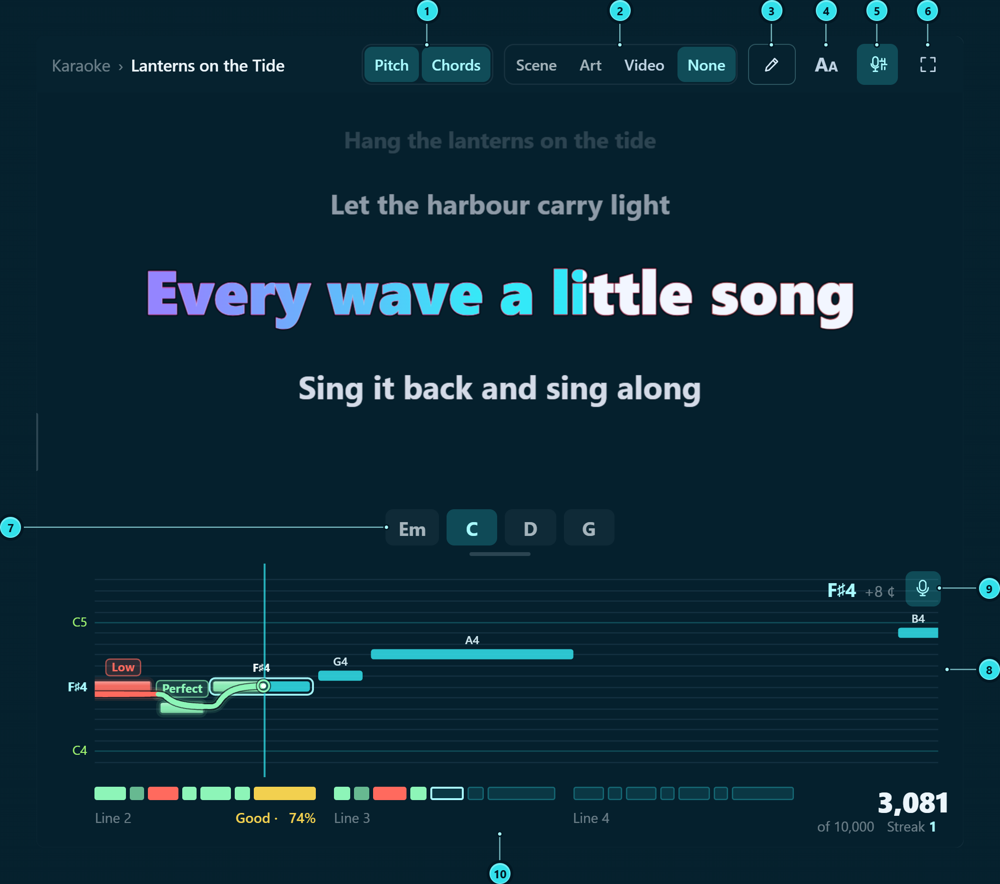
- 1What the stage showsPitch shows the strip of notes, Chords the chord chips. Each turns on and off by itself; with both off the stage shows only the words.
- 2BackgroundWhat stands behind the words: the scene, the song's cover art, its video, or nothing. Art and Video are there when the song brings them.
- 3Open in MakerOpens this song in the Karaoke Maker, to fix its timing, its words or its notes.
- 4Lyric text sizeMakes the words bigger or smaller for the distance you sing from.
- 5Microphone settingsWhich microphone to sing into, how loud it hears you and its volume. It lights up while the microphone is on.
- 6Enter full screenGives the whole window to the stage; double-clicking the stage does the same. In full screen two more buttons here keep the header or the player bar on screen.
- 7ChordsThe chord just played, the one sounding now, lit, and the next two.
- 8Pitch laneThe notes to sing as boxes, and your voice as a line through them: green in tune, yellow close, red off. Drag it to move through the song, and drag the handle above it to make it taller.
- 9Turn on micTurns the microphone on or off. While it listens, the note you are singing shows beside it.
- 10ScoreEach line as a row of cells, one for each note, in its verdict's colour, with your running score and your streak. Press a line to sing it again.
Your songs, beside the stage

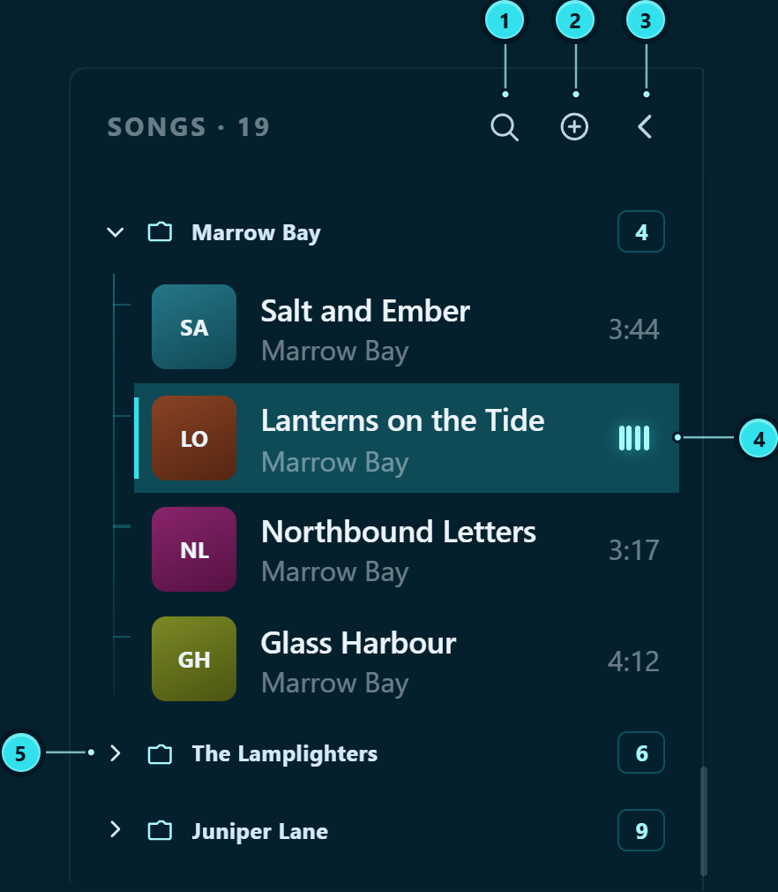
- 1Search songsFinds a song in the list by its title or its file's name.
- 2Add songsAdd files or a folder, group the list by folder, or clear it.
- 3Collapse playlistFolds the list away to give the stage the room. The Playlist button at the start of the stage's row brings it back.
- 4The song on the stageIt wears moving bars while it is sung. Click a song to pick it and double-click it to sing; point at a row to move it up or down or take it out of the list.
- 5A folderWith the list grouped by folder, press a folder to fold its songs away or open them again. The number is how many songs it holds.
Mix settings, on the player bar at the foot of the window

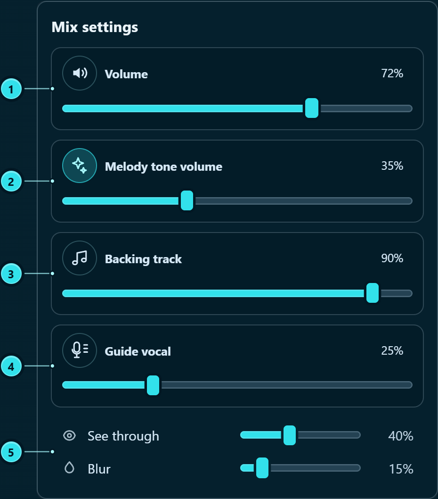
- 1VolumeYour computer's volume, the same fader every tab's bar has. Its icon mutes the sound.
- 2Melody tone volumeA tone that plays the song's notes, to sing along with. Its button turns it on or off.
- 3Backing trackThe music: the song itself, or its backing track once the Karaoke Maker has separated the voice from it.
- 4Guide vocalThe singer's own voice, laid under the backing when the song has been separated. Down to zero for the music alone.
- 5SceneWith the scene behind the words, how much of it shows through and how blurred it is. The Karaoke keeps its own, apart from the graph's.
Microphone settings

- 1Microphone inputThe microphone you sing into.
- 2Turn on micStarts or stops listening. Whether it is on shows at the panel's top right.
- 3Microphone input levelHow loud the microphone hears you right now. Sing and watch it move.
- 4Mic volumeRaises a microphone too quiet for your pitch to be heard, or lowers one that is too loud.
The summary at the end of a song

- 1SummaryYour score out of 10,000, its word, and how it stands against your best on this song.
- 2In tune · On time · NotesHow much of the time you sang inside the notes, how many notes you came in on time, and how many you hit, with every verdict counted under them.
- 3What was hardestThe line that gave you the most trouble and why, with one thing to try next time under it.
- 4Practise that passageTakes you back to just before that line to sing it again.
- 5Sing it againThe whole song again, from the start.
- 6Song mapEvery line with its rating and how many points it moved since your best. Press a line to practise it.
- 7Your last attemptsYour last tries at this song, this one and your best among them.
Try it
- Open Karaoke and press + beside Songs to add files or a whole folder: each song with its lyric file. Double-click a song to sing it.
- Use the row at the top of the stage: Pitch and Chords turn the pitch strip and the chord chips on and off, each on its own; Scene, Art, Video or None chooses what stands behind the words. With Scene on, the scene picker appears beside it.
- Turn on the microphone in the pitch strip's corner and sing. Each note is a box and your voice is a line through it: green in tune, yellow close, red off. Every note gets its verdict as it ends.
- Under the strip, each line of the song is a row of cells with its score. Press a line to sing it again from just before it. When the song ends, its summary shows your score out of 10,000, what was hardest, a tip and every line against your best; See results opens it again.
- Open Mix settings on the player bar for the volume, the melody tone, the backing track and, once the Maker has separated the song, the Guide vocal: the singer's own voice under the music, as loud as you want it.
- Full screen gives the window to the stage. The row and the player bar step away after a few still seconds: move the pointer to the top edge for the header or to the bottom edge for the bar, or pin them with the buttons beside full screen.
Create in Karaoke Maker
The Karaoke Maker turns a song into a karaoke you can sing: its words, when each one is sung, and the notes of the melody. It opens on the song on the stage, in one editor: the tools along the top, the song's sound with the words and notes under it, and a live preview of how the stage will show them.
The editor: the song's sound, its words and its notes

- 1The gridThe song's sound across the top, its words in three lanes under it, and its notes as boxes on the pitch grid, as the stage draws them. Drag with the middle mouse button to move through it in time and pitch.
- 2Pitch rangeWhere the grid stands in pitch, against the whole range. Drag its ends to zoom, its middle to scroll; double-click it to fit the notes.
- 3Song positionThe whole song, with the part shown in the grid framed. Drag the frame to move, its edges to zoom.
- 4Follow lyricsKeeps the playhead in view as the song plays, turning the page when it reaches the edge.
- 5Live previewThe words as the stage will show them, as the song plays. Its A slider sizes the words; hide it for more room.
- 6Lyric timing work statusHow many words you have adjusted by hand, and how many are still as they were detected or imported, with the song's notes, words and checks beside them.
The tools along the top of the Maker

- 1Import karaokeOpens a karaoke file or a saved project, and keeps the audio already loaded.
- 2LyricsThe words and their timing, in one window.
- 3Lyrics timingMoves the words and notes together, for a song that runs early or late from the first second.
- 4Lyrics languageWhich language the words are in, and a second one beside it so the song can be sung in either.
- 5Record line entriesPlay the song and press a key as each line starts and ends. The timing comes from your presses.
- 6Select notesDraw a box around notes to move or delete them as one.
- 7Paint notesDraw the melody straight onto the pitch grid.
- 8Repair toolsSeparates the voice from the music and listens again for the words or the melody, with the AI models they need.
- 9ExportWrites the finished karaoke out as a FluidEQ project, UltraStar TXT, LRC or enhanced LRC.
- 10Use in playerHands the finished karaoke to the stage and closes the Maker.
The words, and when each one is sung

- 1Reference lyricsThe whole song as text, one line per row. Paste it or load a file; FluidEQ finds the timing from it.
- 2Word timingEvery word, in order, with how many are timed so far. Press one to work on it.
- 3Selected wordWhere the chosen word starts and how long it lasts. Moving its edge gives or takes time from the word beside it; the line keeps its length.
Repair tools, and the AI models they need

- 1Separate voice from musicSplits the recording into voice and music. The karaoke can then play without the singer, the Guide vocal fader can bring the voice back under it, and detection hears the words more clearly.
- 2Load vocal-only trackUse a vocal-only file you already have, instead of separating one here.
- 3Re-detect lyric timingListens to the separated voice again and re-times the words you already have. It waits until the voice is separated.
- 4Re-detect melody notesListens to the separated voice again for the melody and rewrites the notes under the words. It waits until the voice is separated.
- 5AI model memoryWhat each model needs and whether it is on this computer. They are downloaded the first time you use one.
- 6When it is idleWhether a model stays in memory between uses, and for how long. Releasing it frees memory; keeping it makes the next run start at once.
Try it
- On the Karaoke stage, press Open in Maker. Press Lyrics and paste the song's words or load a lyric file, one line per row, with every repeat written out.
- Press Detect timing and melody to let FluidEQ listen for when each word is sung and which notes carry it, or Accept and record timing to tap each line in yourself as the song plays. The first time, the AI models it needs are downloaded.
- Check the result in the grid: the words sit in lanes above the notes, and the notes are drawn as the stage draws them. Drag a word or a note to move it, or its edge to change its length. Select notes draws a box round several; Paint notes draws new ones.
- Move through the song with the overview under the grid, or drag with the middle mouse button anywhere on the grid to move in time and pitch at once. The Pitch range against the grid's left edge zooms and scrolls the notes. Follow lyrics keeps the playhead in view, turning the page as it reaches the edge.
- Press Use in player to sing it on the stage. Export saves it as a FluidEQ project, UltraStar TXT, LRC or enhanced LRC; a song from your Library can also be saved back to it with Save to Library.

When something sounds wrong
Start with the source and output, then isolate the layer. A graph, a saved preset or an enabled switch alone cannot prove that sound reached the intended device. The Help menu also leads to audio troubleshooting, problem reporting and the Forum.

- 1The engine’s noticeSays which output the engine is not reaching and why, at the bottom right of the window, once sound is heard there.
- 2Use Equalizer APO…Switches to Equalizer APO instead, through the engine dialog.
- 3Restart Windows audioRestarts Windows audio, which usually brings the engine back. Windows asks for permission.
Try it
- No sound: confirm playback is running, the expected output is selected, volume is up, and the device is connected. Check whether One player at a time paused another source.
- No EQ change: confirm the power key at the top of the left rail is on and the output shows no OFF badge; press Enable if it does. If the engine’s notice says it is not running, press Restart Windows audio.
- Everything looks right and the EQ still does nothing: Windows may be playing the music past the engine. The notice says so and offers one press to move the engine somewhere Windows will use; it costs a permission prompt and a second of silence.
- Distortion or excessive bass: leave Auto normalize on, reduce boosts and bypass layers one at a time. If it persists, use Report a problem and review the report before sending.
Ask in the Forum
The Forum brings FluidEQ’s GitHub Discussions into the app: announcements, ideas, questions and tunings people are proud of. Anyone can read; posting uses your GitHub account, not a FluidEQ one.

- 1BoardsEvery board with its count. New for you gathers what came in since you last looked, and Issues lists the problems reported on GitHub.
- 2Text sizeMakes the Forum’s text, and this guide’s, larger or smaller.
- 3Your GitHub accountWho you post as. Sign out leaves the Forum readable and stops posting.
- 4New topicNew topic starts a discussion; Mark all as read clears the counts, and the arrow fetches what is new.
- 5Search the forumSearches the topics and replies of every board.
- 6TopicsLatest activity first, each with its board, its state, its replies and its votes. Open one to read it and reply.
Try it
- Open Help → Forum and pick a board: Announcements, General, Ideas, Polls, Q&A, Show and tell, Tips & tricks or Support FluidEQ. New for you gathers what came in since you last looked, and Issues lists the problems reported on GitHub.
- Search the forum, or open a topic to read the replies.
- Press Sign in with GitHub, finish in your browser, then post a New topic or a reply.